Analysis for joxm
Davis J. McCarthy
Last updated: 2018-08-17
workflowr checks: (Click a bullet for more information)-
✔ R Markdown file: up-to-date
Great! Since the R Markdown file has been committed to the Git repository, you know the exact version of the code that produced these results.
-
✔ Environment: empty
Great job! The global environment was empty. Objects defined in the global environment can affect the analysis in your R Markdown file in unknown ways. For reproduciblity it’s best to always run the code in an empty environment.
-
✔ Seed:
set.seed(20180807)The command
set.seed(20180807)was run prior to running the code in the R Markdown file. Setting a seed ensures that any results that rely on randomness, e.g. subsampling or permutations, are reproducible. -
✔ Session information: recorded
Great job! Recording the operating system, R version, and package versions is critical for reproducibility.
-
Great! You are using Git for version control. Tracking code development and connecting the code version to the results is critical for reproducibility. The version displayed above was the version of the Git repository at the time these results were generated.✔ Repository version: 8135bb3
Note that you need to be careful to ensure that all relevant files for the analysis have been committed to Git prior to generating the results (you can usewflow_publishorwflow_git_commit). workflowr only checks the R Markdown file, but you know if there are other scripts or data files that it depends on. Below is the status of the Git repository when the results were generated:
Note that any generated files, e.g. HTML, png, CSS, etc., are not included in this status report because it is ok for generated content to have uncommitted changes.Ignored files: Ignored: .DS_Store Ignored: .Rproj.user/ Untracked files: Untracked: analysis/differential_expression.Rmd Untracked: code/analysis_for_garx.Rmd Untracked: data/canopy/ Untracked: data/cell_assignment/ Untracked: data/de_analysis_FTv62/ Untracked: data/donor_info_070818.txt Untracked: data/donor_neutrality.tsv Untracked: data/fdr10.annot.txt.gz Untracked: data/high-vs-low-exomes.v62.ft.alldonors-filt_lenient.all_filt_sites.vep_most_severe_csq.txt Untracked: data/high-vs-low-exomes.v62.ft.filt_lenient-alldonors.txt.gz Untracked: data/human_H_v5p2.rdata Untracked: data/human_c2_v5p2.rdata Untracked: data/human_c6_v5p2.rdata Untracked: data/sce_merged_donors_cardelino_donorid_all_qc_filt.rds Untracked: data/sce_merged_donors_cardelino_donorid_all_with_qc_labels.rds Untracked: data/sce_merged_donors_cardelino_donorid_unstim_qc_filt.rds Untracked: data/sces/ Untracked: data/simulations/ Untracked: data/variance_components/ Untracked: docs/figure/ Untracked: figures/ Untracked: output/donor_specific/ Untracked: output/garx/ Untracked: output/nvars_by_category_by_donor.tsv Untracked: output/nvars_by_category_by_line.tsv Untracked: output/variance_components/
Expand here to see past versions:
Load libraries and data
knitr::opts_chunk$set(echo = TRUE, warning = FALSE, message = FALSE,
fig.height = 10, fig.width = 14)
library(tidyverse)
library(scater)
library(ggridges)
library(GenomicRanges)
library(RColorBrewer)
library(edgeR)
library(ggrepel)
library(rlang)
library(limma)
library(org.Hs.eg.db)
library(ggforce)
library(cardelino)
library(cowplot)
library(IHW)
library(viridis)
library(ggthemes)
library(superheat)
options(stringsAsFactors = FALSE)Load MSigDB gene sets.
load("data/human_c6_v5p2.rdata")
load("data/human_H_v5p2.rdata")
load("data/human_c2_v5p2.rdata")Load VEP consequence information.
vep_best <- read_tsv("data/high-vs-low-exomes.v62.ft.alldonors-filt_lenient.all_filt_sites.vep_most_severe_csq.txt")
colnames(vep_best)[1] <- "Uploaded_variation"
## deduplicate dataframe
vep_best <- vep_best[!duplicated(vep_best[["Uploaded_variation"]]),]Load somatic variant sites from whole-exome sequencing data.
exome_sites <- read_tsv("data/high-vs-low-exomes.v62.ft.filt_lenient-alldonors.txt.gz",
col_types = "ciccdcciiiiccccccccddcdcll", comment = "#",
col_names = TRUE)
exome_sites <- dplyr::mutate(
exome_sites,
chrom = paste0("chr", gsub("chr", "", chrom)),
var_id = paste0(chrom, ":", pos, "_", ref, "_", alt))
## deduplicate sites list
exome_sites <- exome_sites[!duplicated(exome_sites[["var_id"]]),]Add consequences to exome sites.
vep_best[["var_id"]] <- paste0("chr", vep_best[["Uploaded_variation"]])
exome_sites <- inner_join(exome_sites,
vep_best[, c("var_id", "Location", "Consequence")],
by = "var_id")Load cell-clone assignment results for this donor.
cell_assign_joxm <- readRDS(file.path("data/cell_assignment",
paste0("cardelino_results.joxm.filt_lenient.cell_coverage_sites.rds")))Load SCE objects.
params <- list()
params$callset <- "filt_lenient.cell_coverage_sites"
fls <- list.files("data/sces")
fls <- fls[grepl(params$callset, fls)]
donors <- gsub(".*ce_([a-z]+)_.*", "\\1", fls)
sce_unst_list <- list()
for (don in donors) {
sce_unst_list[[don]] <- readRDS(file.path("data/sces",
paste0("sce_", don, "_with_clone_assignments.", params$callset, ".rds")))
cat(paste("reading", don, ": ", ncol(sce_unst_list[[don]]), "cells.\n"))
}reading euts : 79 cells.
reading fawm : 53 cells.
reading feec : 75 cells.
reading fikt : 39 cells.
reading garx : 70 cells.
reading gesg : 105 cells.
reading heja : 50 cells.
reading hipn : 62 cells.
reading ieki : 58 cells.
reading joxm : 79 cells.
reading kuco : 48 cells.
reading laey : 55 cells.
reading lexy : 63 cells.
reading naju : 44 cells.
reading nusw : 60 cells.
reading oaaz : 38 cells.
reading oilg : 90 cells.
reading pipw : 107 cells.
reading puie : 41 cells.
reading qayj : 97 cells.
reading qolg : 36 cells.
reading qonc : 58 cells.
reading rozh : 91 cells.
reading sehl : 30 cells.
reading ualf : 89 cells.
reading vass : 37 cells.
reading vils : 37 cells.
reading vuna : 71 cells.
reading wahn : 82 cells.
reading wetu : 77 cells.
reading xugn : 35 cells.
reading zoxy : 88 cells.assignments_lst <- list()
for (don in donors) {
assignments_lst[[don]] <- as_data_frame(
colData(sce_unst_list[[don]])[,
c("donor_short_id", "highest_prob",
"assigned", "total_features",
"total_counts_endogenous", "num_processed")])
}
assignments <- do.call("rbind", assignments_lst)Load the SCE object for joxm.
sce_joxm <- readRDS("data/sces/sce_joxm_with_clone_assignments.filt_lenient.cell_coverage_sites.rds")
sce_joxmclass: SingleCellExperiment
dim: 13225 79
metadata(1): log.exprs.offset
assays(2): counts logcounts
rownames(13225): ENSG00000000003_TSPAN6 ENSG00000000419_DPM1 ...
ERCC-00170_NA ERCC-00171_NA
rowData names(11): ensembl_transcript_id ensembl_gene_id ...
is_feature_control high_var_gene
colnames(79): 22259_2#169 22259_2#173 ... 22666_2#70 22666_2#71
colData names(128): salmon_version samp_type ... nvars_cloneid
clone_apk2
reducedDimNames(0):
spikeNames(1): ERCCWe can check cell assignments for this donor.
table(sce_joxm$assigned)
clone1 clone2 clone3 unassigned
45 25 7 2 Load DE results (obtained using the edgeR quasi-likelihood F test and the camera method from the limma package).
de_res <- readRDS("data/de_analysis_FTv62/filt_lenient.cell_coverage_sites.de_results_unstimulated_cells.rds")Tree and probability heatmap
We can plot the clonal tree inferred with Canopy for this donor along with the cell-clone assignment results from cardelino.
plot_tree <- function(tree, orient="h") {
node_total <- max(tree$edge)
node_shown <- length(tree$P[, 1])
node_hidden <- node_total - node_shown
prevalence <- c(tree$P[, 1]*100, rep(0, node_hidden))
# node_size <- c(rep(20, node_shown), rep(0, node_hidden))
mut_ids <- 0
mut_id_all <- tree$Z %*% (2**seq(ncol(tree$Z),1))
mut_id_all <- seq(length(unique(mut_id_all)),1)[as.factor(mut_id_all)]
branch_ids <- NULL
for (i in seq_len(node_total)) {
if (i <= node_shown) {
tree$tip.label[i] = paste0("C", i, ": ", round(prevalence[i], digits = 0),
"%")
}
mut_num = sum(tree$sna[,3] == i)
if (mut_num == 0) {
if (i == node_shown + 1) {branch_ids = c(branch_ids, "Root")}
else{branch_ids = c(branch_ids, "")} #NA
}
else {
vaf <- mean(tree$VAF[tree$sna[,3] == i])
mut_ids <- mut_ids + 1
mut_ids <- mean(mut_id_all[tree$sna[,3] == i])
branch_ids <- c(branch_ids, paste0(mut_num, " mutations"))
}
}
pt <- ggtree::ggtree(tree)
pt <- pt + ggplot2::geom_label(ggplot2::aes_string(x = "branch"),
label = branch_ids, color = "firebrick", size = 6)
pt <- pt + ggplot2::xlim(-0, node_hidden + 0.5) + ggplot2::ylim(0.8, node_shown + 0.5) #the degree may not be 3
if (orient == "v") {
pt <- pt + ggtree::geom_tiplab(hjust = 0.39, vjust = 1.0, size = 6) +
ggplot2::scale_x_reverse() + ggplot2::coord_flip()
} else {
pt <- pt + ggtree::geom_tiplab(hjust = 0.0, vjust = 0.5, size = 6)
}
pt
}snv_label <- cardelino:::mut.label(cell_assign_joxm$tree)
fig_tree <- plot_tree(cell_assign_joxm$full_tree, orient = "v") +
xlab("Clonal tree") +
cardelino:::heatmap.theme(size = 16) +
theme(axis.text.x = element_blank(), axis.title.y = element_text(size = 20))
prob_to_plot <- cell_assign_joxm$prob_mat[
colnames(sce_joxm)[sce_joxm$well_condition == "unstimulated"], ]
hc <- hclust(dist(prob_to_plot))
clone_ids <- colnames(prob_to_plot)
clone_frac <- colMeans(prob_to_plot[matrixStats::rowMaxs(prob_to_plot) > 0.5,])
clone_perc <- paste0(clone_ids, ": ",
round(clone_frac*100, digits = 1), "%")
colnames(prob_to_plot) <- clone_perc
nba.m <- as_data_frame(prob_to_plot[hc$order,]) %>%
dplyr::mutate(cell = rownames(prob_to_plot[hc$order,])) %>%
gather(key = "clone", value = "prob", -cell)
nba.m <- dplyr::mutate(nba.m, cell = factor(
cell, levels = rownames(prob_to_plot[hc$order,])))
fig_assign <- ggplot(nba.m, aes(clone, cell, fill = prob)) +
geom_tile(show.legend = TRUE) +
# scale_fill_gradient(low = "white", high = "firebrick4",
# name = "posterior probability of assignment") +
scico::scale_fill_scico(palette = "oleron", direction = 1) +
ylab(paste("Single cells")) +
cardelino:::heatmap.theme(size = 16) + #cardelino:::pub.theme() +
theme(axis.title.y = element_text(size = 20), legend.position = "bottom",
legend.text = element_text(size = 12), legend.key.size = unit(0.05, "npc"))
plot_grid(fig_tree, fig_assign, nrow = 2, rel_heights = c(0.46, 0.52))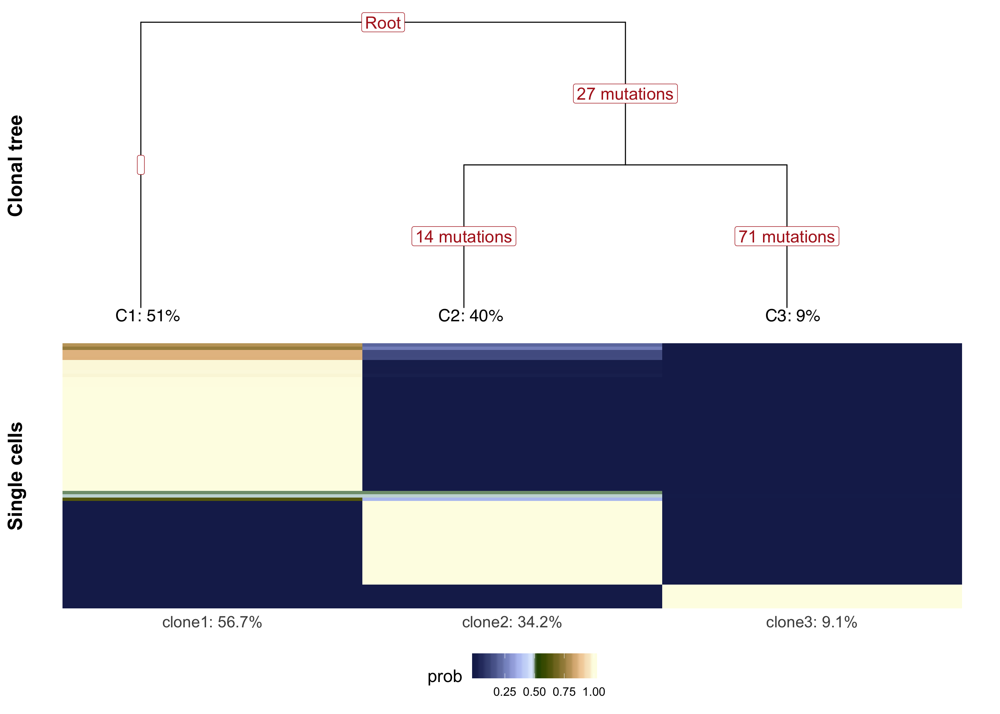
ggsave("figures/donor_specific/joxm_tree_probmat.png", height = 10, width = 7.5)
ggsave("figures/donor_specific/joxm_tree_probmat.pdf", height = 10, width = 7.5)
ggsave("figures/donor_specific/joxm_tree_probmat.svg", height = 10, width = 7.5)
ggsave("figures/donor_specific/joxm_tree_probmat_wide.png", height = 9, width = 10)
ggsave("figures/donor_specific/joxm_tree_probmat_wide.pdf", height = 9, width = 10)
ggsave("figures/donor_specific/joxm_tree_probmat_wide.svg", height = 9, width = 10)Analysis of direct effects of variants on gene expression
Load SCE object and cell assignment results.
First, plot the VEP consequences of somatic variants in this donor used to infer the clonal tree.
joxm_config <- as_data_frame(cell_assign_joxm$full_tree$Z)
joxm_config[["var_id"]] <- rownames(cell_assign_joxm$full_tree$Z)
exome_sites_joxm <- inner_join(exome_sites, joxm_config)
exome_sites_joxm[["clone_presence"]] <- ""
for (cln in colnames(cell_assign_joxm$full_tree$Z)[-1]) {
exome_sites_joxm[["clone_presence"]][
as.logical(exome_sites_joxm[[cln]])] <- paste(
exome_sites_joxm[["clone_presence"]][
as.logical(exome_sites_joxm[[cln]])], cln, sep = "&")
}
exome_sites_joxm[["clone_presence"]] <- gsub("^&", "",
exome_sites_joxm[["clone_presence"]])
exome_sites_joxm %>% group_by(Consequence, clone_presence) %>%
summarise(n_vars = n()) %>%
ggplot(aes(x = n_vars, y = reorder(Consequence, n_vars, max),
colour = reorder(Consequence, n_vars, max))) +
geom_point(size = 5) +
geom_segment(aes(x = 0, y = Consequence, xend = n_vars, yend = Consequence)) +
facet_wrap(~clone_presence) +
# scale_color_brewer(palette = "Set2") +
scale_color_manual(values = colorRampPalette(brewer.pal(8, "Accent"))(12)) +
guides(colour = FALSE) +
ggtitle("joxm clone tagging variants by consequence class") +
xlab("number of variants") + ylab("consequence") +
theme_bw(16)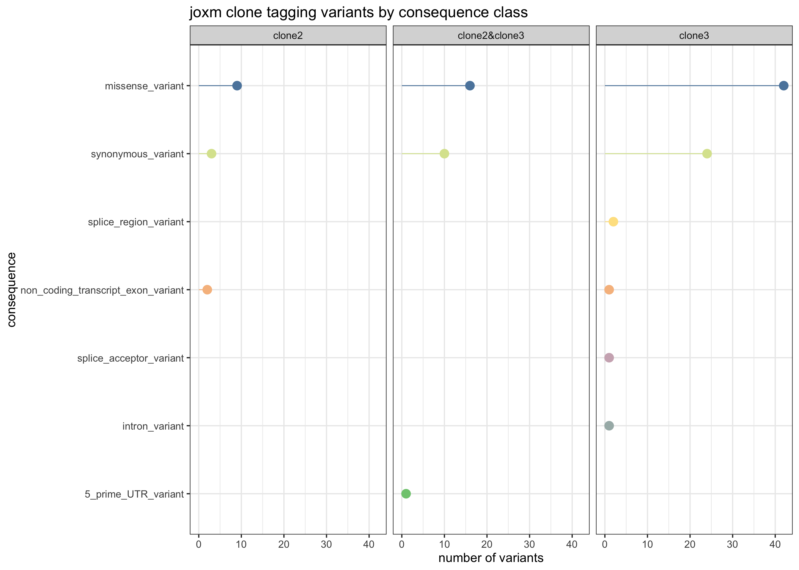
Look at expression of genes with mutations.
Organise data for analysis.
## filter out any remaining ERCC genes
sce_joxm <- sce_joxm[!rowData(sce_joxm)$is_feature_control,]
sce_joxm_gr <- makeGRangesFromDataFrame(rowData(sce_joxm),
start.field = "start_position",
end.field = "end_position",
keep.extra.columns = TRUE)
exome_sites_joxm[["chrom"]] <- gsub("chr", "", exome_sites_joxm[["chrom"]])
exome_sites_joxm_gr <- makeGRangesFromDataFrame(exome_sites_joxm,
start.field = "pos",
end.field = "pos",
keep.extra.columns = TRUE)
# find overlaps
ov_joxm <- findOverlaps(sce_joxm_gr, exome_sites_joxm_gr)
tmp_cols <- colnames(mcols(exome_sites_joxm_gr))
tmp_cols <- tmp_cols[grepl("clone", tmp_cols)]
tmp_cols <- c("Consequence", tmp_cols, "var_id")
mut_genes_exprs_joxm <- logcounts(sce_joxm)[queryHits(ov_joxm),]
mut_genes_df_joxm <- as_data_frame(mut_genes_exprs_joxm)
mut_genes_df_joxm[["gene"]] <- rownames(mut_genes_exprs_joxm)
mut_genes_df_joxm <- bind_cols(mut_genes_df_joxm,
as_data_frame(
exome_sites_joxm_gr[
subjectHits(ov_joxm)])[, tmp_cols]
)DE comparing mutated clone to all other clones
Get DE results comparing mutated clone to all unmutated clones.
cell_assign_list <- list()
for (don in donors) {
cell_assign_list[[don]] <- readRDS(file.path("data/cell_assignment",
paste0("cardelino_results.", don, ".", params$callset, ".rds")))
cat(paste("reading", don, "\n"))
} reading euts
reading fawm
reading feec
reading fikt
reading garx
reading gesg
reading heja
reading hipn
reading ieki
reading joxm
reading kuco
reading laey
reading lexy
reading naju
reading nusw
reading oaaz
reading oilg
reading pipw
reading puie
reading qayj
reading qolg
reading qonc
reading rozh
reading sehl
reading ualf
reading vass
reading vils
reading vuna
reading wahn
reading wetu
reading xugn
reading zoxy get_sites_by_donor <- function(sites_df, sce_list, assign_list) {
if (!identical(sort(names(sce_list)), sort(names(assign_list))))
stop("donors do not match between sce_list and assign_list.")
sites_by_donor <- list()
for (don in names(sce_list)) {
config <- as_data_frame(assign_list[[don]]$tree$Z)
config[["var_id"]] <- rownames(assign_list[[don]]$tree$Z)
sites_donor <- inner_join(sites_df, config)
sites_donor[["clone_presence"]] <- ""
for (cln in colnames(assign_list[[don]]$tree$Z)[-1]) {
sites_donor[["clone_presence"]][
as.logical(sites_donor[[cln]])] <- paste(
sites_donor[["clone_presence"]][
as.logical(sites_donor[[cln]])], cln, sep = "&")
}
sites_donor[["clone_presence"]] <- gsub("^&", "",
sites_donor[["clone_presence"]])
## drop config columns as these won't match up between donors
keep_cols <- grep("^clone[0-9]$", colnames(sites_donor), invert = TRUE)
sites_by_donor[[don]] <- sites_donor[, keep_cols]
}
do.call("bind_rows", sites_by_donor)
}
sites_by_donor <- get_sites_by_donor(exome_sites, sce_unst_list, cell_assign_list)
sites_by_donor_gr <- makeGRangesFromDataFrame(sites_by_donor,
start.field = "pos",
end.field = "pos",
keep.extra.columns = TRUE)
## run DE for mutated cells vs unmutated cells using existing DE results
## filter out any remaining ERCC genes
for (don in names(de_res[["sce_list_unst"]]))
de_res[["sce_list_unst"]][[don]] <- de_res[["sce_list_unst"]][[don]][
!rowData(de_res[["sce_list_unst"]][[don]])$is_feature_control,]
sce_de_list_gr <- list()
for (don in names(de_res[["sce_list_unst"]])) {
sce_de_list_gr[[don]] <- makeGRangesFromDataFrame(
rowData(de_res[["sce_list_unst"]][[don]]),
start.field = "start_position",
end.field = "end_position",
keep.extra.columns = TRUE)
seqlevelsStyle(sce_de_list_gr[[don]]) <- "UCSC"
}
mut_genes_df_allcells_list <- list()
for (don in names(de_res[["sce_list_unst"]])) {
cat("working on ", don, "\n")
sites_tmp <- sites_by_donor_gr[sites_by_donor_gr$donor_short_id == don]
ov_tmp <- findOverlaps(sce_de_list_gr[[don]], sites_tmp)
sce_tmp <- de_res[["sce_list_unst"]][[don]][queryHits(ov_tmp),]
sites_tmp <- sites_tmp[subjectHits(ov_tmp)]
sites_tmp$gene <- rownames(sce_tmp)
dge_tmp <- de_res[["dge_list"]][[don]]
dge_tmp <- dge_tmp[intersect(rownames(dge_tmp), sites_tmp$gene),]
base_design <- dge_tmp$design[, !grepl("assigned", colnames(dge_tmp$design))]
de_tbl_tmp <- data.frame(donor = don,
gene = sites_tmp$gene,
hgnc_symbol = gsub(".*_", "", sites_tmp$gene),
ensembl_gene_id = gsub("_.*", "", sites_tmp$gene),
var_id = sites_tmp$var_id,
location = sites_tmp$Location,
consequence = sites_tmp$Consequence,
clone_presence = sites_tmp$clone_presence,
logFC = NA, logCPM = NA, F = NA, PValue = NA,
comment = "")
for (i in seq_len(length(sites_tmp))) {
clones_tmp <- strsplit(sites_tmp$clone_presence[i], split = "&")[[1]]
mutatedclone <- as.numeric(sce_tmp$assigned %in% clones_tmp)
dsgn_tmp <- cbind(base_design, data.frame(mutatedclone))
if (sites_tmp$gene[i] %in% rownames(dge_tmp) && is.fullrank(dsgn_tmp)) {
qlfit_tmp <- glmQLFit(dge_tmp[sites_tmp$gene[i],], dsgn_tmp)
de_tmp <- glmQLFTest(qlfit_tmp, coef = ncol(dsgn_tmp))
de_tbl_tmp$logFC[i] <- de_tmp$table$logFC
de_tbl_tmp$logCPM[i] <- de_tmp$table$logCPM
de_tbl_tmp$F[i] <- de_tmp$table$F
de_tbl_tmp$PValue[i] <- de_tmp$table$PValue
}
if (!(sites_tmp$gene[i] %in% rownames(dge_tmp)))
de_tbl_tmp$comment[i] <- "gene did not pass DE filters"
if (!is.fullrank(dsgn_tmp))
de_tbl_tmp$comment[i] <- "insufficient cells assigned to clone"
}
mut_genes_df_allcells_list[[don]] <- de_tbl_tmp
}working on euts
working on fawm
working on feec
working on fikt
working on garx
working on gesg
working on heja
working on hipn
working on ieki
working on joxm
working on kuco
working on laey
working on lexy
working on naju
working on nusw
working on oaaz
working on oilg
working on pipw
working on puie
working on qayj
working on qolg
working on qonc
working on rozh
working on sehl
working on ualf
working on vass
working on vuna
working on wahn
working on wetu
working on xugn
working on zoxy mut_genes_df_allcells <- do.call("bind_rows", mut_genes_df_allcells_list)
## add FDRs for genes tested here for DE
ihw_res_all <- ihw(PValue ~ logCPM, data = mut_genes_df_allcells, alpha = 0.2)
mut_genes_df_allcells$FDR <- adj_pvalues(ihw_res_all)
## add simplified consequence categories
mut_genes_df_allcells$consequence_simplified <-
mut_genes_df_allcells$consequence
mut_genes_df_allcells$consequence_simplified[
mut_genes_df_allcells$consequence_simplified %in%
c("stop_retained_variant", "start_lost", "stop_lost", "stop_gained")] <- "nonsense"
mut_genes_df_allcells$consequence_simplified[
mut_genes_df_allcells$consequence_simplified %in%
c("splice_donor_variant", "splice_acceptor_variant", "splice_region_variant")] <- "splicing"
# table(mut_genes_df_allcells$consequence_simplified)
# dplyr::arrange(mut_genes_df_allcells, FDR) %>% dplyr::select(-location) %>% head(n = 20)For just the donor joxm.
tmp4 <- mut_genes_df_allcells %>%
dplyr::filter(!is.na(logFC), donor == "joxm") %>%
group_by(consequence_simplified) %>%
summarise(med = median(logFC, na.rm = TRUE),
nvars = n())
tmp4# A tibble: 6 x 3
consequence_simplified med nvars
<chr> <dbl> <int>
1 5_prime_UTR_variant 1.01 1
2 intron_variant -0.620 2
3 missense_variant 0.161 68
4 non_coding_transcript_exon_variant 0.504 3
5 splicing -1.77 3
6 synonymous_variant 0.114 35df_to_plot <- mut_genes_df_allcells %>%
dplyr::filter(!is.na(logFC), donor == "joxm") %>%
dplyr::mutate(
FDR = p.adjust(PValue, method = "BH"),
consequence_simplified = factor(
consequence_simplified,
levels(as.factor(consequence_simplified))[order(tmp4[["med"]])]),
de = ifelse(FDR < 0.2, "FDR < 0.2", "FDR > 0.2"))
df_to_plot %>%
dplyr::select(gene, hgnc_symbol, consequence, clone_presence, logFC,
F, FDR, PValue, ) %>%
dplyr::arrange(FDR) %>% head(n = 20) gene hgnc_symbol consequence
1 ENSG00000084764_MAPRE3 MAPRE3 missense_variant
2 ENSG00000108821_COL1A1 COL1A1 splice_region_variant
3 ENSG00000108821_COL1A1 COL1A1 splice_acceptor_variant
4 ENSG00000101407_TTI1 TTI1 synonymous_variant
5 ENSG00000101407_TTI1 TTI1 synonymous_variant
6 ENSG00000129295_LRRC6 LRRC6 missense_variant
7 ENSG00000070476_ZXDC ZXDC synonymous_variant
8 ENSG00000130881_LRP3 LRP3 synonymous_variant
9 ENSG00000130881_LRP3 LRP3 missense_variant
10 ENSG00000113739_STC2 STC2 missense_variant
11 ENSG00000113739_STC2 STC2 synonymous_variant
12 ENSG00000120910_PPP3CC PPP3CC missense_variant
13 ENSG00000120910_PPP3CC PPP3CC missense_variant
14 ENSG00000148634_HERC4 HERC4 missense_variant
15 ENSG00000149090_PAMR1 PAMR1 missense_variant
16 ENSG00000164733_CTSB CTSB missense_variant
17 ENSG00000171988_JMJD1C JMJD1C missense_variant
18 ENSG00000152104_PTPN14 PTPN14 missense_variant
19 ENSG00000107104_KANK1 KANK1 synonymous_variant
20 ENSG00000155760_FZD7 FZD7 synonymous_variant
clone_presence logFC F FDR PValue
1 clone3 3.8716568 23.039769 0.000747834 8.522327e-06
2 clone3 -1.7740117 20.890355 0.000747834 2.003127e-05
3 clone3 -1.7740117 20.890355 0.000747834 2.003127e-05
4 clone3 -3.5639521 9.352689 0.062873349 3.231516e-03
5 clone3 -3.5639521 9.352689 0.062873349 3.231516e-03
6 clone3 4.0179032 9.427437 0.062873349 3.368215e-03
7 clone2&clone3 1.7524962 8.742413 0.076352392 4.772025e-03
8 clone3 -4.3916456 7.142454 0.118301675 9.506385e-03
9 clone3 -4.3916456 7.142454 0.118301675 9.506385e-03
10 clone3 -2.1130626 5.420882 0.150671578 2.275029e-02
11 clone3 -2.1130626 5.420882 0.150671578 2.275029e-02
12 clone3 -3.8707756 5.760656 0.150671578 1.901363e-02
13 clone3 -3.8707756 5.760656 0.150671578 1.901363e-02
14 clone2 0.9169862 5.642177 0.150671578 2.023682e-02
15 clone2 1.5886601 6.113726 0.150671578 1.581047e-02
16 clone3 0.5893547 5.411016 0.150671578 2.286979e-02
17 clone3 -4.7300117 6.367750 0.150671578 1.386136e-02
18 clone3 -1.4639453 4.629869 0.216672611 3.482238e-02
19 clone3 -2.2478896 4.044822 0.262086654 4.810464e-02
20 clone3 -3.4765049 3.923814 0.262086654 5.148131e-02df_to_plot %>%
dplyr::arrange(FDR) %>% write_tsv("output/donor_specific/joxm_mut_genes_de_results.tsv")
p_mutated_clone <- ggplot(df_to_plot, aes(y = logFC, x = consequence_simplified)) +
geom_hline(yintercept = 0, linetype = 1, colour = "black") +
geom_boxplot(outlier.size = 0, outlier.alpha = 0, fill = "gray90",
colour = "firebrick4", width = 0.2, size = 1) +
ggbeeswarm::geom_quasirandom(aes(fill = -log10(PValue)),
colour = "gray40", pch = 21, size = 4) +
geom_segment(aes(y = -0.25, x = 0, yend = -1, xend = 0),
colour = "black", size = 1, arrow = arrow(length = unit(0.5, "cm"))) +
annotate("text", y = -3, x = 0, size = 6, label = "lower in mutated clone") +
geom_segment(aes(y = 0.25, x = 0, yend = 1, xend = 0),
colour = "black", size = 1, arrow = arrow(length = unit(0.5, "cm"))) +
annotate("text", y = 3, x = 0, size = 6, label = "higher in mutated clone") +
scale_x_discrete(expand = c(0.1, .05), name = "consequence") +
scale_y_continuous(expand = c(0.1, 0.1), name = "logFC") +
expand_limits(x = c(-0.75, 8)) +
theme_ridges(22) +
coord_flip() +
scale_fill_viridis(option = "B", name = "-log10(P)") +
theme(strip.background = element_rect(fill = "gray90"),
legend.position = "right") +
guides(color = FALSE)
ggsave("figures/donor_specific/joxm_mutgenes_logfc-box_by_simple_vep_anno_allcells.png",
plot = p_mutated_clone, height = 6, width = 11.5)
ggsave("figures/donor_specific/joxm_mutgenes_logfc-box_by_simple_vep_anno_allcells.pdf",
plot = p_mutated_clone, height = 6, width = 11.5)
ggsave("figures/donor_specific/joxm_mutgenes_logfc-box_by_simple_vep_anno_allcells.svg",
plot = p_mutated_clone, height = 6, width = 11.5)
p_mutated_clone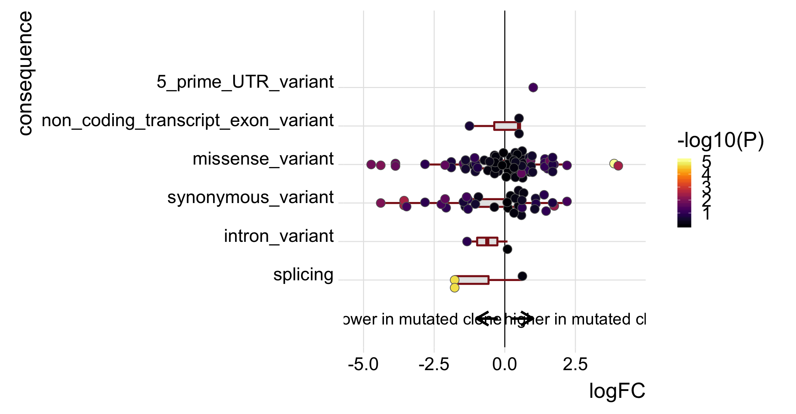
Differential expression transcriptome-wide
First we can look for genes that have any significant difference in expression between clones. The summary below shows the number of significant and non-significant genes at a Benjamini-Hochberg FDR threshold of 10%.
knitr::opts_chunk$set(fig.height = 6, fig.width = 8)
summary(decideTests(de_res$qlf_list$joxm, p.value = 0.1)) assignedclone2+assignedclone3
NotSig 10066
Sig 810We can view the 10 genes with strongest evidence for differential expression across clones.
topTags(de_res$qlf_list$joxm)Coefficient: assignedclone2 assignedclone3
logFC.assignedclone2 logFC.assignedclone3
ENSG00000205542_TMSB4X -0.3023108 -5.8522620
ENSG00000124508_BTN2A2 -0.2459654 4.1365436
ENSG00000158882_TOMM40L -0.2505807 6.2110289
ENSG00000146776_ATXN7L1 5.8270769 3.3529992
ENSG00000026652_AGPAT4 2.3275355 5.8438114
ENSG00000215271_HOMEZ 4.2253817 2.6162565
ENSG00000175395_ZNF25 -2.0965884 4.6776995
ENSG00000135776_ABCB10 0.6052318 4.9791996
ENSG00000095739_BAMBI 4.5209639 -0.3917716
ENSG00000136158_SPRY2 -1.2067010 4.7697302
logCPM F PValue FDR
ENSG00000205542_TMSB4X 12.477948 94.66521 1.436183e-22 1.561992e-18
ENSG00000124508_BTN2A2 2.496792 47.80350 1.337387e-12 7.272710e-09
ENSG00000158882_TOMM40L 3.335185 39.13535 2.791699e-12 1.012084e-08
ENSG00000146776_ATXN7L1 3.835711 32.60187 2.696990e-11 7.333115e-08
ENSG00000026652_AGPAT4 2.860028 33.33203 5.154075e-11 1.121114e-07
ENSG00000215271_HOMEZ 2.859662 29.31946 1.837343e-10 3.024195e-07
ENSG00000175395_ZNF25 3.172467 29.22302 1.946429e-10 3.024195e-07
ENSG00000135776_ABCB10 2.677793 28.66313 2.878293e-10 3.913039e-07
ENSG00000095739_BAMBI 3.003355 27.56289 7.356968e-10 8.890487e-07
ENSG00000136158_SPRY2 2.678918 37.12940 9.180697e-10 9.984926e-07We can check that the estimates of the biological coefficient of variation from the negative binomial model look sensible. Here they do, so we can expect sensible DE results.
plotBCV(de_res$dge_list$joxm)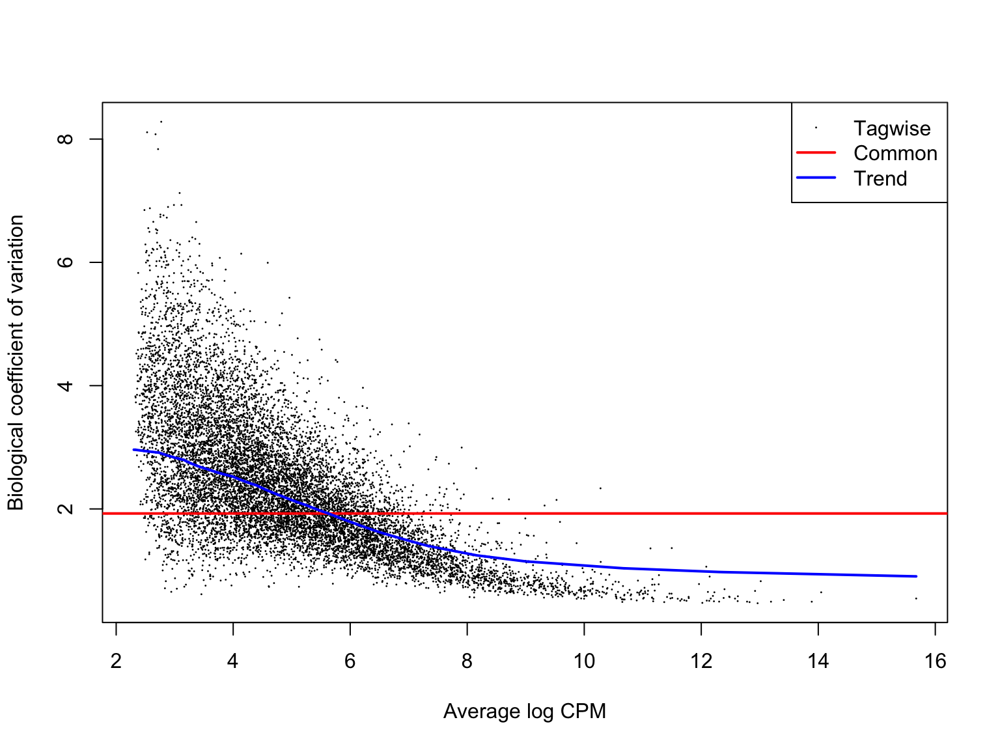
Likewise, a plot of the quasi-likelihood parameter against average gene expression looks smooth and sensible.
plotQLDisp(de_res$qlf_list$joxm)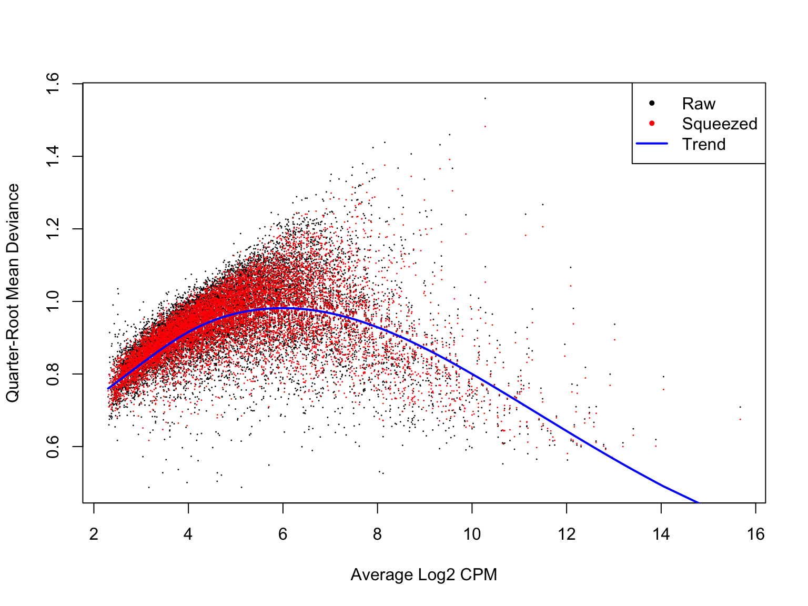
Pairwise comparisons of clones
As well as looking for any difference in expression across clones, we can also inspect specific pairwise contrasts of clones for differential expression.
For this donor, we are able to look at 3 pairwise contrasts.
The output below shows the top 10 DE genes for pair of (testable) clones.
cntrsts <- names(de_res$qlf_pairwise$joxm)[-1]
for (i in cntrsts) {
print(topTags(de_res$qlf_pairwise$joxm[[i]]))
}Coefficient: assignedclone2
logFC logCPM F PValue
ENSG00000146776_ATXN7L1 5.827077 3.835711 64.30472 4.498991e-12
ENSG00000215271_HOMEZ 4.225382 2.859662 56.05503 5.364501e-11
ENSG00000095739_BAMBI 4.520964 3.003355 46.60880 1.445218e-09
ENSG00000165475_CRYL1 3.996486 3.059529 40.49459 8.888705e-09
ENSG00000256977_LIMS3 3.135677 2.706958 39.83407 1.906565e-08
ENSG00000159753_RLTPR 5.226381 3.755735 39.53017 6.256811e-08
ENSG00000113368_LMNB1 -4.997582 3.942806 34.07096 1.117409e-07
ENSG00000166896_XRCC6BP1 2.895536 2.624735 33.06210 1.296717e-07
ENSG00000165752_STK32C -5.481148 4.472443 32.52622 1.623309e-07
ENSG00000197465_GYPE 2.990544 2.605616 32.66869 1.753971e-07
ensembl_gene_id hgnc_symbol entrezid FDR
ENSG00000146776_ATXN7L1 ENSG00000146776 ATXN7L1 222255 4.893102e-08
ENSG00000215271_HOMEZ ENSG00000215271 HOMEZ 57594 2.917216e-07
ENSG00000095739_BAMBI ENSG00000095739 BAMBI 25805 5.239396e-06
ENSG00000165475_CRYL1 ENSG00000165475 CRYL1 51084 2.416839e-05
ENSG00000256977_LIMS3 ENSG00000256977 LIMS3 96626 4.147160e-05
ENSG00000159753_RLTPR ENSG00000159753 RLTPR 146206 1.134151e-04
ENSG00000113368_LMNB1 ENSG00000113368 LMNB1 4001 1.736134e-04
ENSG00000166896_XRCC6BP1 ENSG00000166896 XRCC6BP1 91419 1.762887e-04
ENSG00000165752_STK32C ENSG00000165752 STK32C 282974 1.781606e-04
ENSG00000197465_GYPE ENSG00000197465 GYPE 2996 1.781606e-04
Coefficient: assignedclone3
logFC logCPM F PValue
ENSG00000205542_TMSB4X -5.852262 12.477948 189.21636 1.498701e-23
ENSG00000026652_AGPAT4 5.843811 2.860028 66.34644 7.445621e-12
ENSG00000158882_TOMM40L 6.211029 3.335185 60.60022 3.546620e-11
ENSG00000124508_BTN2A2 4.136544 2.496792 63.33803 1.287895e-10
ENSG00000135776_ABCB10 4.979200 2.677793 53.08658 1.428713e-10
ENSG00000129048_ACKR4 8.019482 3.724983 64.39167 4.309404e-10
ENSG00000173295_FAM86B3P 6.961215 3.304938 46.94436 9.910493e-10
ENSG00000180787_ZFP3 5.590345 3.316930 47.51174 1.318667e-09
ENSG00000136158_SPRY2 4.769730 2.678918 45.24647 5.038485e-08
ENSG00000115274_INO80B 5.431696 3.962204 35.47870 5.321455e-08
ensembl_gene_id hgnc_symbol entrezid FDR
ENSG00000205542_TMSB4X ENSG00000205542 TMSB4X 7114 1.629988e-19
ENSG00000026652_AGPAT4 ENSG00000026652 AGPAT4 56895 4.048928e-08
ENSG00000158882_TOMM40L ENSG00000158882 TOMM40L 84134 1.285768e-07
ENSG00000124508_BTN2A2 ENSG00000124508 BTN2A2 10385 3.107736e-07
ENSG00000135776_ABCB10 ENSG00000135776 ABCB10 23456 3.107736e-07
ENSG00000129048_ACKR4 ENSG00000129048 ACKR4 51554 7.811513e-07
ENSG00000173295_FAM86B3P ENSG00000173295 FAM86B3P 286042 1.539807e-06
ENSG00000180787_ZFP3 ENSG00000180787 ZFP3 124961 1.792728e-06
ENSG00000136158_SPRY2 ENSG00000136158 SPRY2 10253 5.787615e-05
ENSG00000115274_INO80B ENSG00000115274 INO80B 83444 5.787615e-05
Coefficient: -1*assignedclone2 1*assignedclone3
logFC logCPM F PValue
ENSG00000205542_TMSB4X -5.549951 12.477948 172.64899 2.245791e-22
ENSG00000175395_ZNF25 6.774288 3.172467 52.34814 1.715489e-10
ENSG00000124508_BTN2A2 4.382509 2.496792 54.55918 1.066814e-09
ENSG00000136158_SPRY2 5.976431 2.678918 60.70034 1.773587e-09
ENSG00000158882_TOMM40L 6.461610 3.335185 43.62111 5.558774e-09
ENSG00000039139_DNAH5 5.409017 3.274807 40.86835 1.009588e-08
ENSG00000100084_HIRA 5.697154 3.117679 43.55610 1.971861e-08
ENSG00000164099_PRSS12 5.657648 3.227355 36.02313 4.365453e-08
ENSG00000148840_PPRC1 5.208851 2.900446 34.66077 1.144716e-07
ENSG00000165752_STK32C 6.964619 4.472443 31.84313 2.096428e-07
ensembl_gene_id hgnc_symbol entrezid FDR
ENSG00000205542_TMSB4X ENSG00000205542 TMSB4X 7114 2.442523e-18
ENSG00000175395_ZNF25 ENSG00000175395 ZNF25 219749 9.328827e-07
ENSG00000124508_BTN2A2 ENSG00000124508 BTN2A2 10385 3.867555e-06
ENSG00000136158_SPRY2 ENSG00000136158 SPRY2 10253 4.822382e-06
ENSG00000158882_TOMM40L ENSG00000158882 TOMM40L 84134 1.209145e-05
ENSG00000039139_DNAH5 ENSG00000039139 DNAH5 1767 1.830047e-05
ENSG00000100084_HIRA ENSG00000100084 HIRA 7290 3.063708e-05
ENSG00000164099_PRSS12 ENSG00000164099 PRSS12 8492 5.934833e-05
ENSG00000148840_PPRC1 ENSG00000148840 PPRC1 23082 1.383325e-04
ENSG00000165752_STK32C ENSG00000165752 STK32C 282974 2.280075e-04Below we see the following plots for each pairwise comparison:
- A “mean-difference” plot: log-fold-change (between clones) vs average expression;
- A “volcano plot”: -log10(PValue) vs log-fold-change between clones.
In the MD plots we see logFC distributions centred around zero as we would hope (gold line in plots shows lowess curve through points).
for (i in cntrsts) {
plotMD(de_res$qlf_pairwise$joxm[[i]], p.value = 0.1)
lines(lowess(x = de_res$qlf_pairwise$joxm[[i]]$table$logCPM,
y = de_res$qlf_pairwise$joxm[[i]]$table$logFC),
col = "goldenrod3", lwd = 4)
de_tab <- de_res$qlf_pairwise$joxm[[i]]$table
de_tab[["gene"]] <- rownames(de_tab)
de_tab <- de_tab %>%
dplyr::mutate(FDR = adj_pvalues(ihw(PValue ~ logCPM, alpha = 0.1)),
sig = FDR < 0.1,
signed_F = sign(logFC) * F)
de_tab[["lab"]] <- ""
int_genes_entrezid <- c(Hs.H$HALLMARK_G2M_CHECKPOINT, Hs.H$HALLMARK_E2F_TARGETS,
Hs.c2$ROSTY_CERVICAL_CANCER_PROLIFERATION_CLUSTER)
mm <- match(int_genes_entrezid, de_tab$entrezid)
mm <- mm[!is.na(mm)]
int_genes_hgnc <- de_tab$hgnc_symbol[mm]
int_genes_hgnc <- c(int_genes_hgnc, "MYBL1")
genes_to_label <- (de_tab[["hgnc_symbol"]] %in% int_genes_hgnc &
de_tab[["FDR"]] < 0.1)
de_tab[["lab"]][genes_to_label] <-
de_tab[["hgnc_symbol"]][genes_to_label]
p_vulcan <- ggplot(de_tab, aes(x = logFC, y = -log10(PValue), fill = sig,
label = lab)) +
geom_point(aes(size = sig), pch = 21, colour = "gray40") +
geom_label_repel(show.legend = FALSE,
arrow = arrow(type = "closed", length = unit(0.25, "cm")),
nudge_x = 0.2, nudge_y = 0.3, fill = "gray95") +
geom_segment(aes(x = -1, y = 0, xend = -4, yend = 0),
colour = "black", size = 1, arrow = arrow(length = unit(0.5, "cm"))) +
annotate("text", x = -4, y = -0.5, size = 6,
label = paste("higher in", strsplit(i, "_")[[1]][2])) +
geom_segment(aes(x = 1, y = 0, xend = 4, yend = 0),
colour = "black", size = 1, arrow = arrow(length = unit(0.5, "cm"))) +
annotate("text", x = 4, y = -0.5, size = 6,
label = paste("higher in", strsplit(i, "_")[[1]][1])) +
scale_fill_manual(values = c("gray60", "firebrick"),
label = c("N.S.", "FDR < 10%"), name = "") +
scale_size_manual(values = c(1, 3), guide = FALSE) +
guides(alpha = FALSE,
fill = guide_legend(override.aes = list(size = 5))) +
theme_classic(20) + theme(legend.position = "right")
print(p_vulcan)
ggsave(paste0("figures/donor_specific/joxm_volcano_", i, ".png"),
plot = p_vulcan, height = 6, width = 9)
ggsave(paste0("figures/donor_specific/joxm_volcano_", i, ".pdf"),
plot = p_vulcan, height = 6, width = 9)
ggsave(paste0("figures/donor_specific/joxm_volcano_", i, ".svg"),
plot = p_vulcan, height = 6, width = 9)
}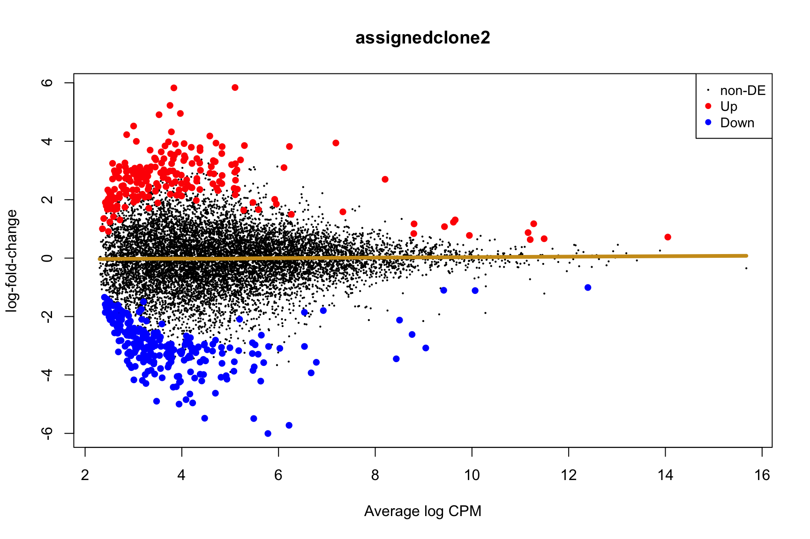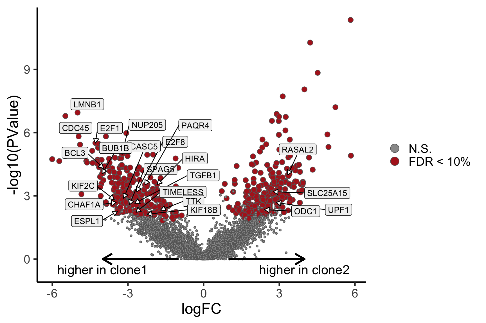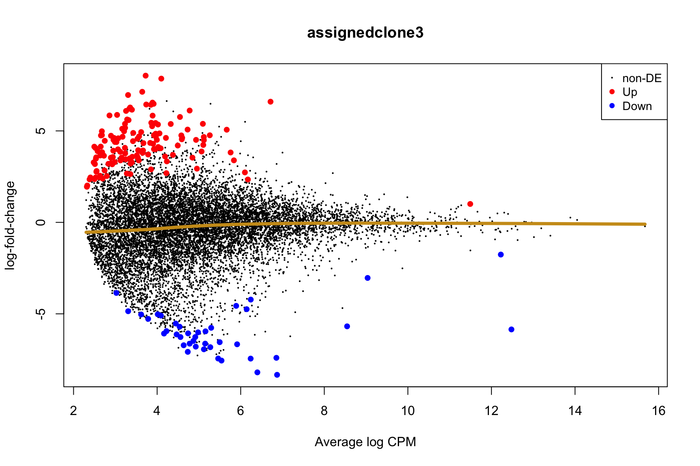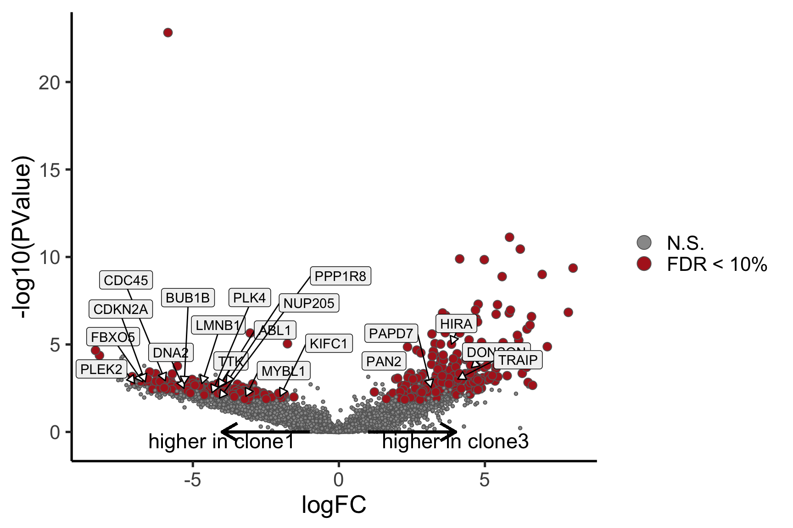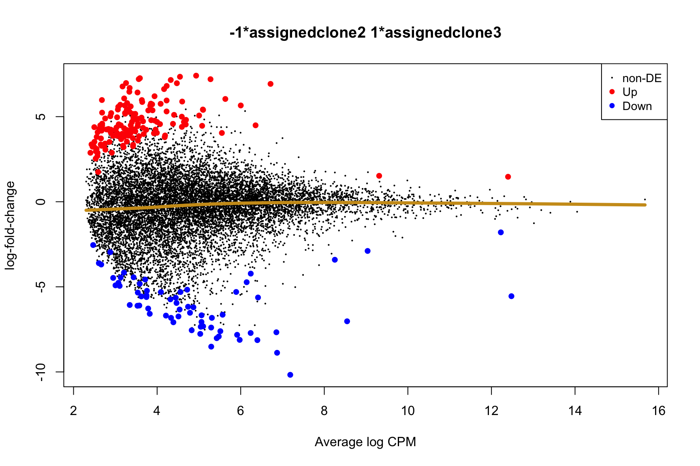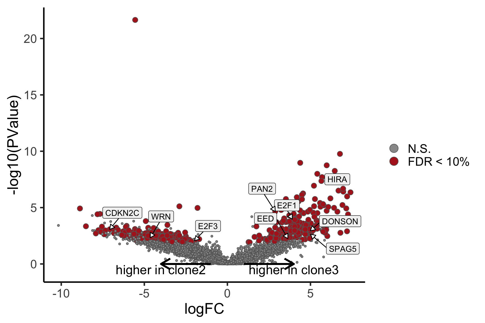
Gene set enrichment results
We extend our analysis from looking at differential expression for single genes to looking for enrichment in gene sets. We use gene sets from the MSigDB collection.
We use the camera method from the limma package to conduct competitive gene set testing. This method uses the full distributions of logFC statistics from pairwise clone contrasts to identify significantly enriched gene sets.
MSigDB Hallmark gene sets
We look primarily at the “Hallmark” collection of gene sets from MSigDB.
for (i in cntrsts) {
print(i)
cam_H_pw <- de_res$camera$H$joxm[[i]]$logFC
cam_H_pw[["geneset"]] <- rownames(de_res$camera$H$joxm[[i]]$logFC)
cam_H_pw <- cam_H_pw %>%
dplyr::mutate(sig = FDR < 0.05)
print(head(cam_H_pw))
}[1] "clone2_clone1"
NGenes Direction PValue FDR
1 198 Down 7.528815e-08 3.764408e-06
2 189 Down 1.201847e-06 3.004616e-05
3 180 Down 2.525380e-03 4.208966e-02
4 83 Down 4.356000e-02 5.445000e-01
5 23 Down 8.915415e-02 7.630703e-01
6 62 Down 9.817179e-02 7.630703e-01
geneset sig
1 HALLMARK_E2F_TARGETS TRUE
2 HALLMARK_G2M_CHECKPOINT TRUE
3 HALLMARK_MITOTIC_SPINDLE TRUE
4 HALLMARK_ALLOGRAFT_REJECTION FALSE
5 HALLMARK_WNT_BETA_CATENIN_SIGNALING FALSE
6 HALLMARK_SPERMATOGENESIS FALSE
[1] "clone3_clone1"
NGenes Direction PValue FDR geneset
1 189 Down 0.03478297 0.9801348 HALLMARK_G2M_CHECKPOINT
2 55 Up 0.15076698 0.9801348 HALLMARK_MYC_TARGETS_V2
3 180 Down 0.15334031 0.9801348 HALLMARK_MITOTIC_SPINDLE
4 198 Up 0.15598297 0.9801348 HALLMARK_OXIDATIVE_PHOSPHORYLATION
5 76 Up 0.17798786 0.9801348 HALLMARK_PEROXISOME
6 69 Up 0.18485565 0.9801348 HALLMARK_COAGULATION
sig
1 FALSE
2 FALSE
3 FALSE
4 FALSE
5 FALSE
6 FALSE
[1] "clone3_clone2"
NGenes Direction PValue FDR geneset
1 198 Up 0.03033312 0.9435644 HALLMARK_E2F_TARGETS
2 155 Up 0.07516361 0.9435644 HALLMARK_GLYCOLYSIS
3 55 Up 0.13413562 0.9435644 HALLMARK_MYC_TARGETS_V2
4 116 Down 0.15395929 0.9435644 HALLMARK_INTERFERON_GAMMA_RESPONSE
5 120 Up 0.17465889 0.9435644 HALLMARK_IL2_STAT5_SIGNALING
6 76 Up 0.26073405 0.9435644 HALLMARK_PEROXISOME
sig
1 FALSE
2 FALSE
3 FALSE
4 FALSE
5 FALSE
6 FALSEBelow we see the following plots for each pairwise comparison:
- A -log10(PValue) vs direction plot for enrichment of each of the 50 Hallmark gene sets;
- A logFC “barcode plot”: distribution of the logFC statistics for genes in the E2F targets and G2M checkpoint gene sets relative to all other genes;
- A signed-F “barcode plot”: distribution of the signed F statistics for genes in the E2F targets and G2M checkpoint gene sets relative to all other genes.
for (i in cntrsts) {
cam_H_pw <- de_res$camera$H$joxm[[i]]$logFC
cam_H_pw[["geneset"]] <- rownames(de_res$camera$H$joxm[[i]]$logFC)
cam_H_pw <- cam_H_pw %>%
dplyr::mutate(sig = FDR < 0.05)
cam_H_pw[["lab"]] <- ""
cam_H_pw[["lab"]][1:3] <-
cam_H_pw[["geneset"]][1:3]
cam_H_pw[["Direction"]][cam_H_pw[["Direction"]] == "Up"] <-
paste("Up in", strsplit(i, "_")[[1]][1], "vs", strsplit(i, "_")[[1]][2])
cam_H_pw[["Direction"]][cam_H_pw[["Direction"]] == "Down"] <-
paste("Down in", strsplit(i, "_")[[1]][1], "vs", strsplit(i, "_")[[1]][2])
de_tab <- de_res$qlf_pairwise$joxm[[i]]$table
de_tab[["gene"]] <- rownames(de_tab)
de_tab <- de_tab %>%
dplyr::mutate(FDR = adj_pvalues(ihw(PValue ~ logCPM, alpha = 0.1)),
sig = FDR < 0.1,
signed_F = sign(logFC) * F)
p_hallmark <- cam_H_pw %>%
ggplot(aes(x = Direction, y = -log10(PValue), colour = sig,
label = lab)) +
ggbeeswarm::geom_quasirandom(aes(size = NGenes)) +
geom_label_repel(show.legend = FALSE,
nudge_y = 0.3, nudge_x = 0.3, fill = "gray95") +
scale_colour_manual(values = c("gray50", "firebrick"),
label = c("N.S.", "FDR < 5%"), name = "") +
guides(alpha = FALSE,
fill = guide_legend(override.aes = list(size = 5))) +
xlab("Gene set enrichment direction") +
theme_classic(20) + theme(legend.position = "right")
print(p_hallmark)
ggsave(paste0("figures/donor_specific/joxm_camera_H_", i, ".png"),
plot = p_hallmark, height = 6, width = 9)
ggsave(paste0("figures/donor_specific/joxm_camera_H_", i, ".png"),
plot = p_hallmark, height = 6, width = 9)
ggsave(paste0("figures/donor_specific/joxm_camera_H_", i, ".png"),
plot = p_hallmark, height = 6, width = 9)
idx <- ids2indices(Hs.H, id = de_tab$entrezid)
barcodeplot(de_tab$logFC, index = idx$HALLMARK_E2F_TARGETS,
index2 = idx$HALLMARK_G2M_CHECKPOINT, xlab = "logFC",
main = paste0("joxm: ", i, "\n HALLMARK_E2F_TARGETS and HALLMARK_G2M_CHECKPOINT"))
png(paste0("figures/donor_specific/joxm_camera_H_", i, "_barcode_logFC_E2F_G2M.png"),
height = 400, width = 600)
barcodeplot(de_tab$logFC, index = idx$HALLMARK_E2F_TARGETS,
index2 = idx$HALLMARK_G2M_CHECKPOINT, xlab = "logFC",
main = paste0("joxm: ", i, "\n HALLMARK_E2F_TARGETS and HALLMARK_G2M_CHECKPOINT"))
dev.off()
barcodeplot(de_tab$signed_F, index = idx$HALLMARK_E2F_TARGETS,
index2 = idx$HALLMARK_G2M_CHECKPOINT, xlab = "signed F statistic",
main = paste0("joxm: ", i, "\n HALLMARK_E2F_TARGETS and HALLMARK_G2M_CHECKPOINT"))
png(paste0("figures/donor_specific/joxm_camera_H_", i, "_barcode_signedF_E2F_G2M.png"),
height = 400, width = 600)
barcodeplot(de_tab$signed_F, index = idx$HALLMARK_E2F_TARGETS,
index2 = idx$HALLMARK_G2M_CHECKPOINT, xlab = "signed F statistic",
main = paste0("joxm: ", i, "\n HALLMARK_E2F_TARGETS and HALLMARK_G2M_CHECKPOINT"))
dev.off()
} 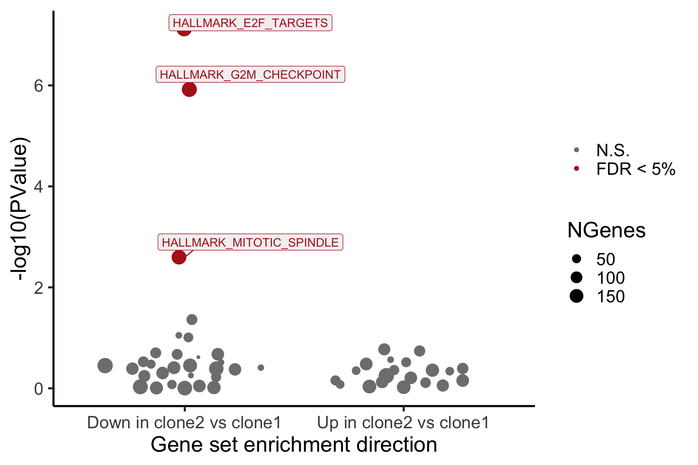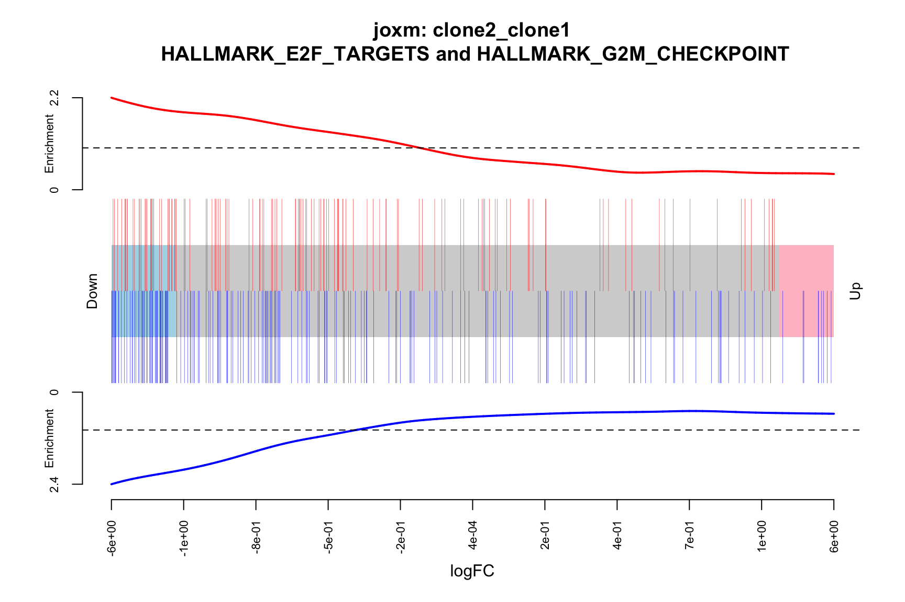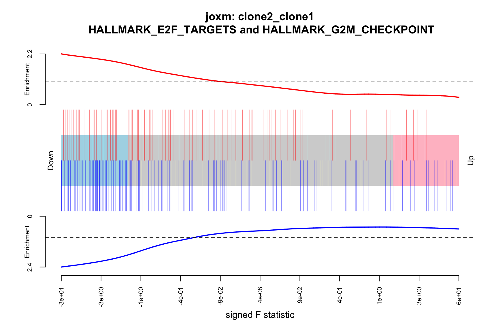 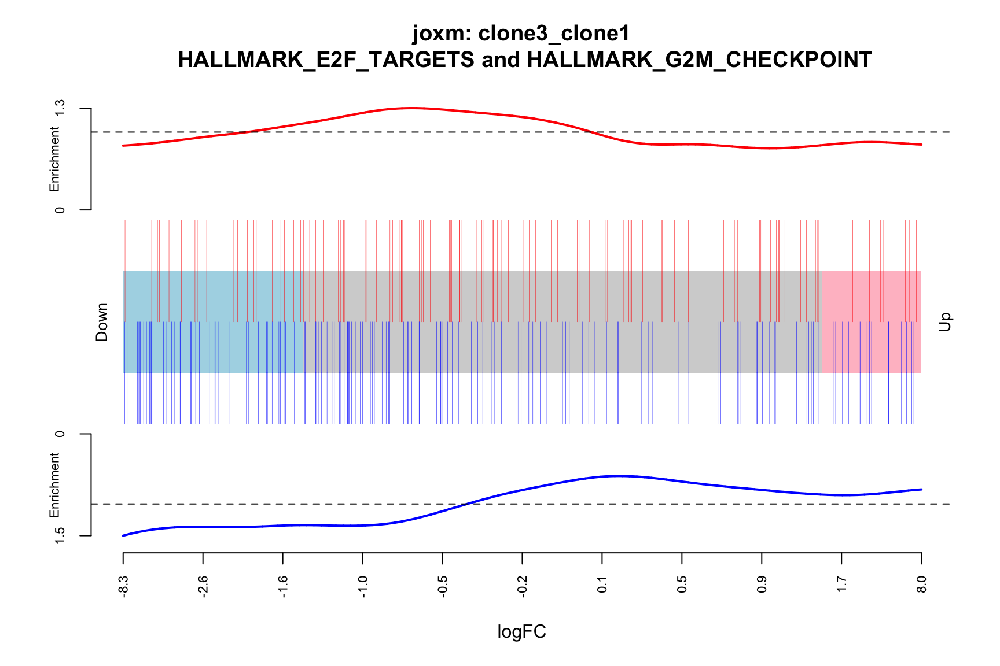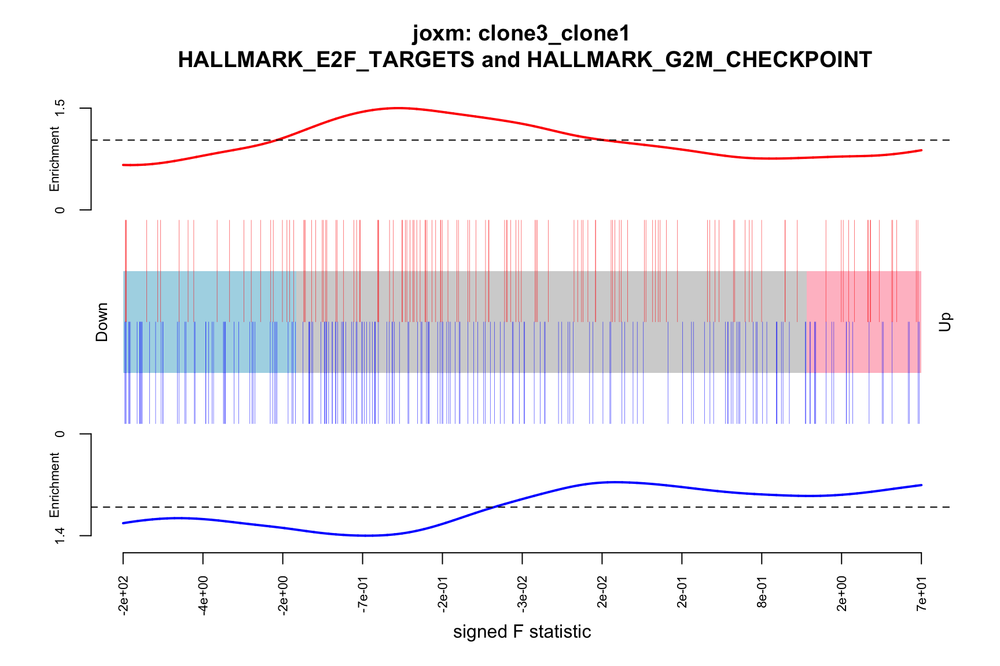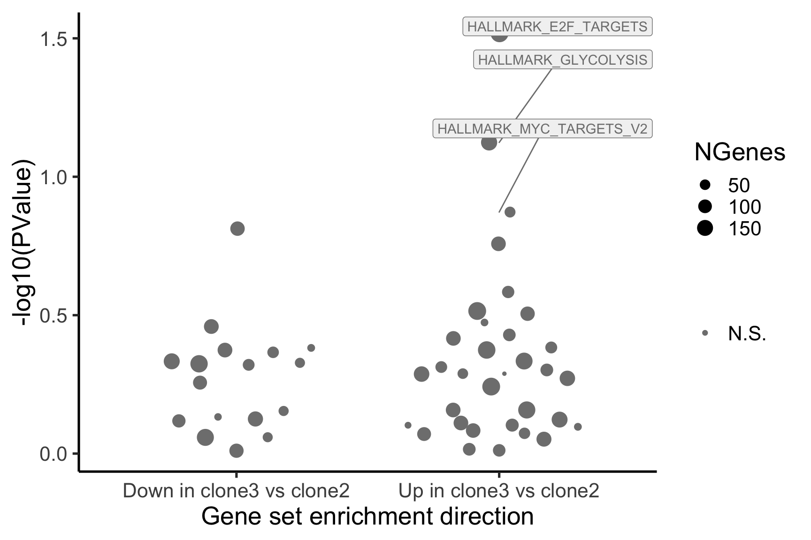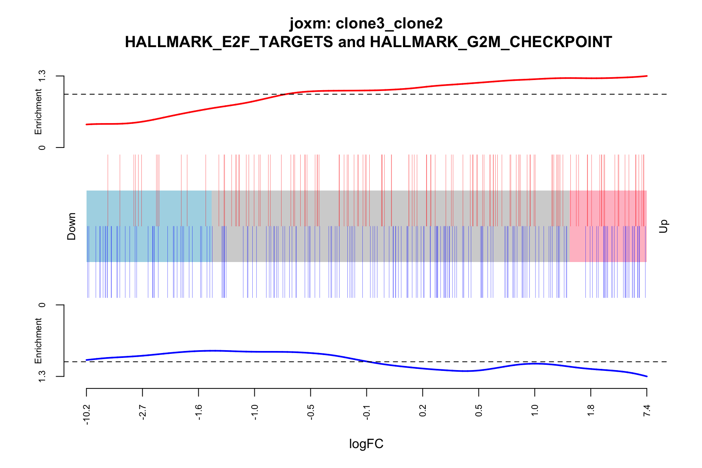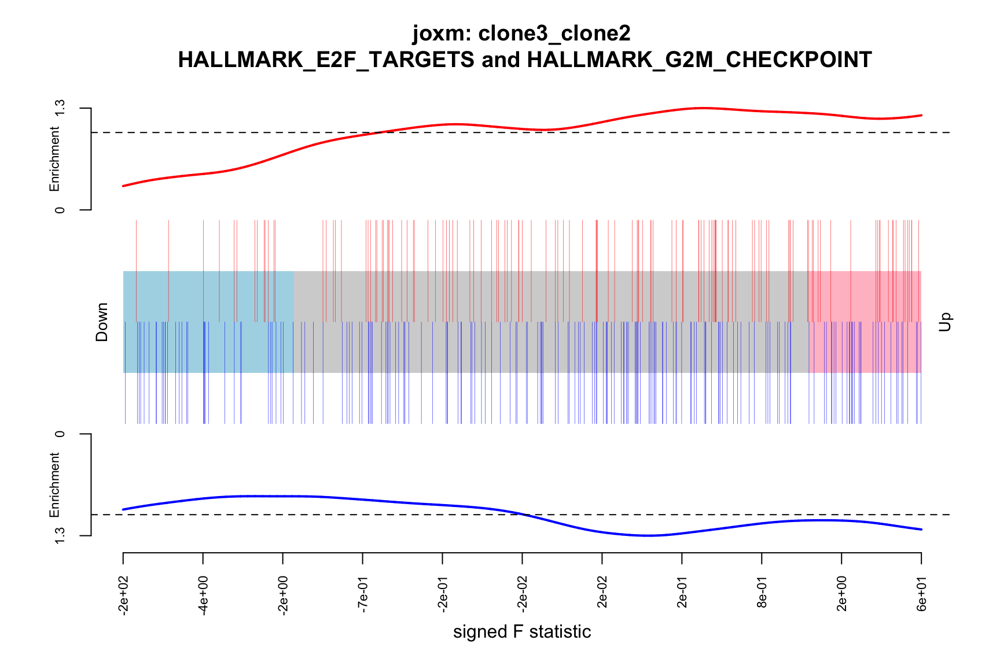
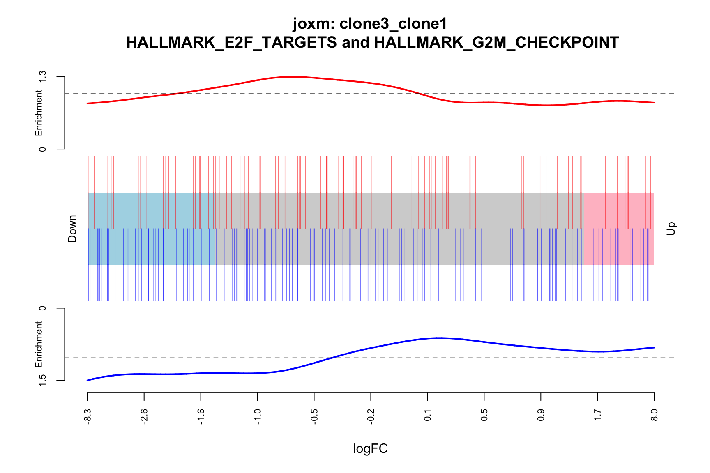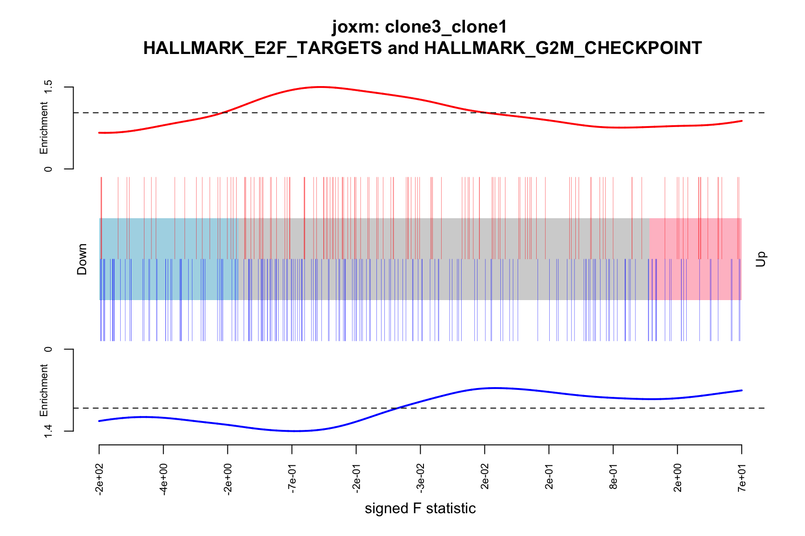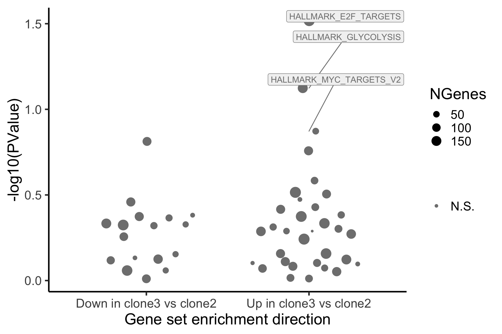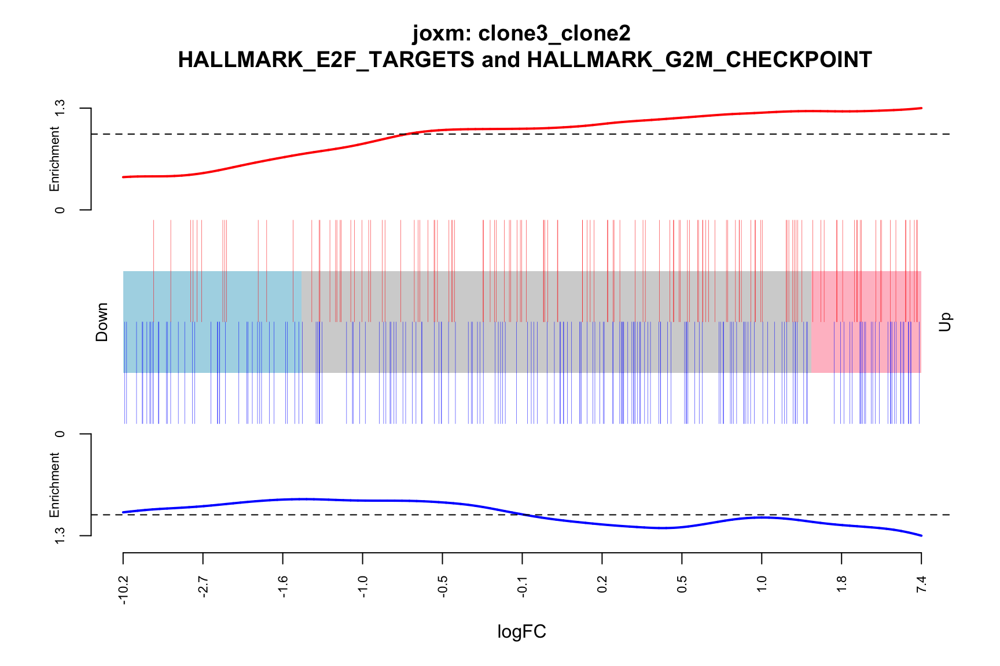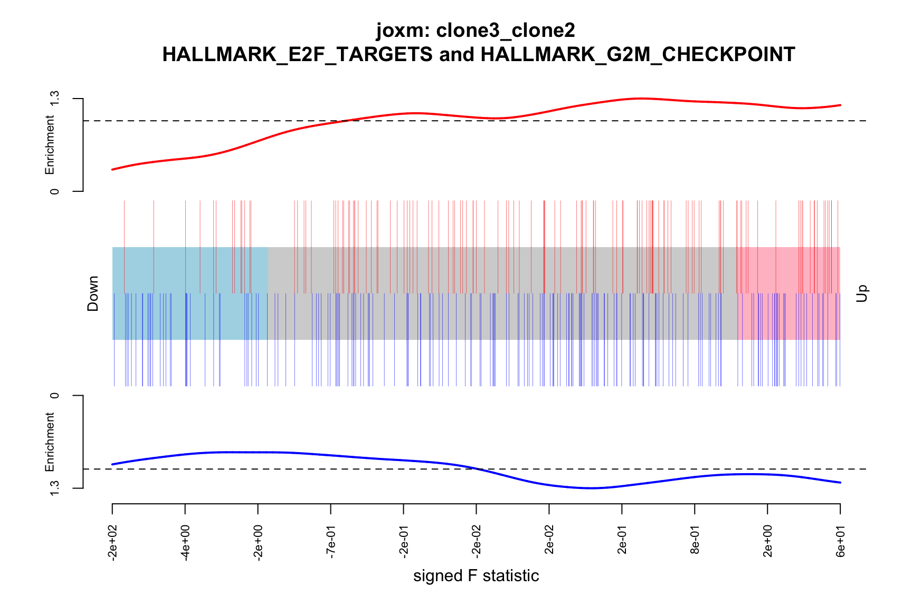
One could carry out similar analyses and produce similar plots for the c2 and c6 MSigDB gene set collections.
Test for difference in cell cycle phases by clone
We observe differing proportions of cells in different phases of the cell cycle by clone.
as.data.frame(colData(de_res[["sce_list_unst"]][["joxm"]])) %>%
dplyr::mutate(Cell_Cycle = factor(cyclone_phase, levels = c("G2M", "S", "G1")),
assigned = factor(assigned, levels = c("clone3", "clone2", "clone1"))) %>%
ggplot(aes(x = assigned, fill = Cell_Cycle)) +
geom_bar() +
scale_fill_manual(values = c("#ff6a5c", "#ccdfcb", "#414141")) +
coord_flip() +
guides(fill = guide_legend(reverse = TRUE)) +
theme(axis.title.y = element_blank())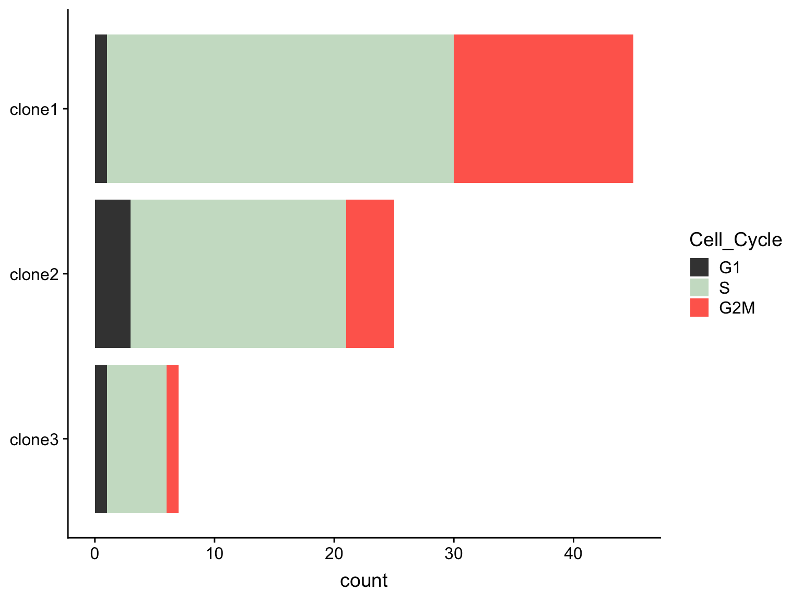
as.data.frame(colData(de_res[["sce_list_unst"]][["joxm"]])) %>%
dplyr::mutate(Cell_Cycle = factor(cyclone_phase, levels = c("G2M", "S", "G1")),
assigned = factor(assigned, levels = c("clone3", "clone2", "clone1"))) %>%
ggplot(aes(x = assigned, fill = Cell_Cycle)) +
geom_bar(position = "fill") +
scale_fill_manual(values = c("#ff6a5c", "#ccdfcb", "#414141")) +
coord_flip() +
ylab("proportion") +
guides(fill = guide_legend(reverse = TRUE)) +
theme(axis.title.y = element_blank())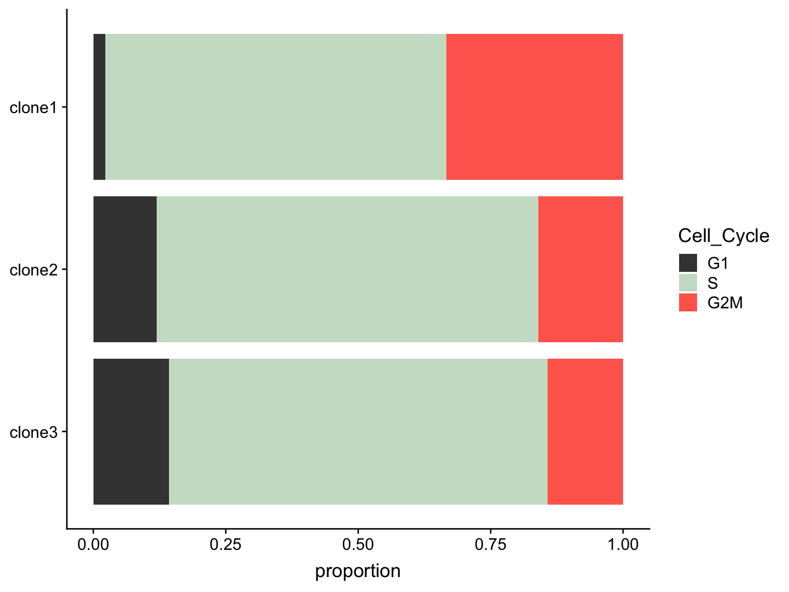
A Fisher Exact Test can provide some guidance about whether or not these differences in cell cycle proportions are expected by chance.
freqs <- as.matrix(table(
de_res[["sce_list_unst"]][["joxm"]]$assigned,
de_res[["sce_list_unst"]][["joxm"]]$cyclone_phase))
fisher.test(freqs)
Fisher's Exact Test for Count Data
data: freqs
p-value = 0.1731
alternative hypothesis: two.sidedWe can also test just for differences in proportions between clone1 and clone2.
fisher.test(freqs[-3,])
Fisher's Exact Test for Count Data
data: freqs[-3, ]
p-value = 0.1021
alternative hypothesis: two.sidedPCA plots
Principal component analysis can reveal global structure from single-cell transcriptomic profiles.
choose_joxm_cells <- (sce_joxm$well_condition == "unstimulated" &
sce_joxm$assigned != "unassigned")
pca_unst <- reducedDim(runPCA(sce_joxm[, choose_joxm_cells],
ntop = 500, ncomponents = 10), "PCA")
pca_unst <- data.frame(
PC1 = pca_unst[, 1], PC2 = pca_unst[, 2],
PC3 = pca_unst[, 3], PC4 = pca_unst[, 4],
PC5 = pca_unst[, 5], PC6 = pca_unst[, 6],
clone = sce_joxm[, choose_joxm_cells]$assigned,
nvars_cloneid = sce_joxm[, choose_joxm_cells]$nvars_cloneid,
cyclone_phase = sce_joxm[, choose_joxm_cells]$cyclone_phase,
G1 = sce_joxm[, choose_joxm_cells]$G1,
G2M = sce_joxm[, choose_joxm_cells]$G2M,
S = sce_joxm[, choose_joxm_cells]$S,
clone1_prob = sce_joxm[, choose_joxm_cells]$clone1_prob,
clone2_prob = sce_joxm[, choose_joxm_cells]$clone2_prob,
clone3_prob = sce_joxm[, choose_joxm_cells]$clone3_prob,
RPS6KA2 = as.vector(logcounts(sce_joxm[grep("RPS6KA2", rownames(sce_joxm)), choose_joxm_cells]))
)
ggplot(pca_unst, aes(x = PC1, y = PC2, fill = clone)) +
geom_point(pch = 21, size = 4, colour = "gray30") +
scale_fill_brewer(palette = "Accent", name = "assigned\nclone") +
theme_classic(14)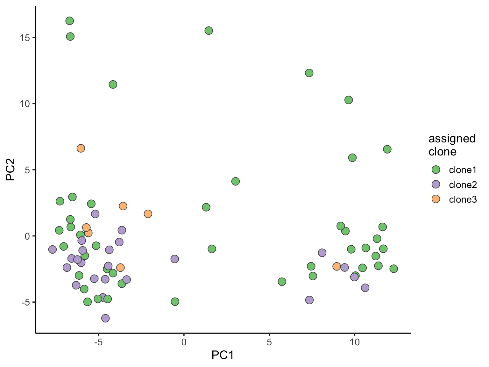
ggplot(pca_unst, aes(x = PC2, y = PC3, fill = clone)) +
geom_point(pch = 21, size = 4, colour = "gray30") +
scale_fill_brewer(palette = "Accent", name = "assigned\nclone") +
theme_classic(14)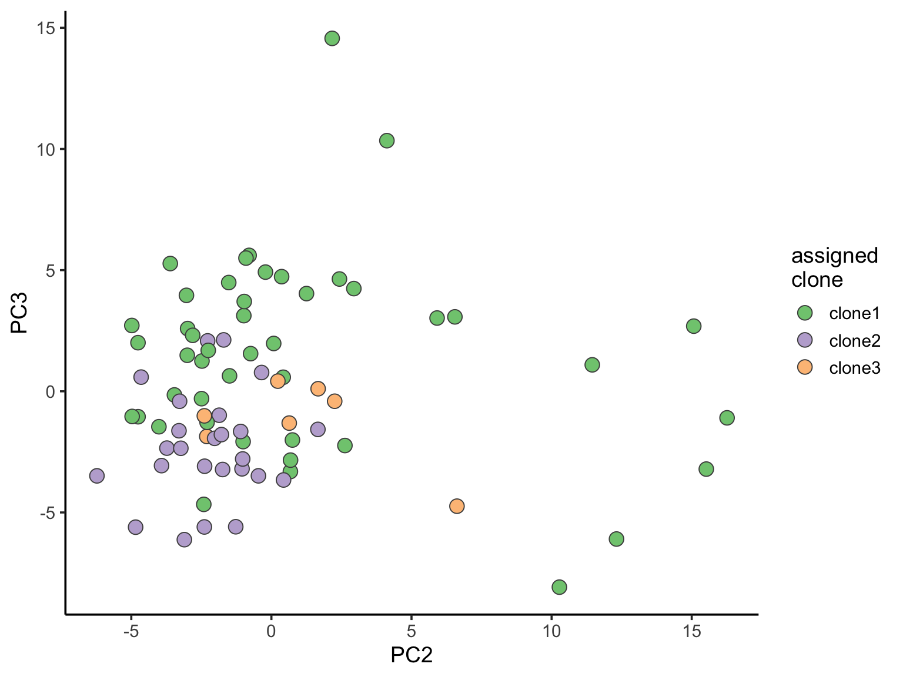
ggplot(pca_unst, aes(x = PC2, y = PC4, fill = clone)) +
geom_point(pch = 21, size = 4, colour = "gray30") +
scale_fill_brewer(palette = "Accent", name = "assigned\nclone") +
theme_classic(14)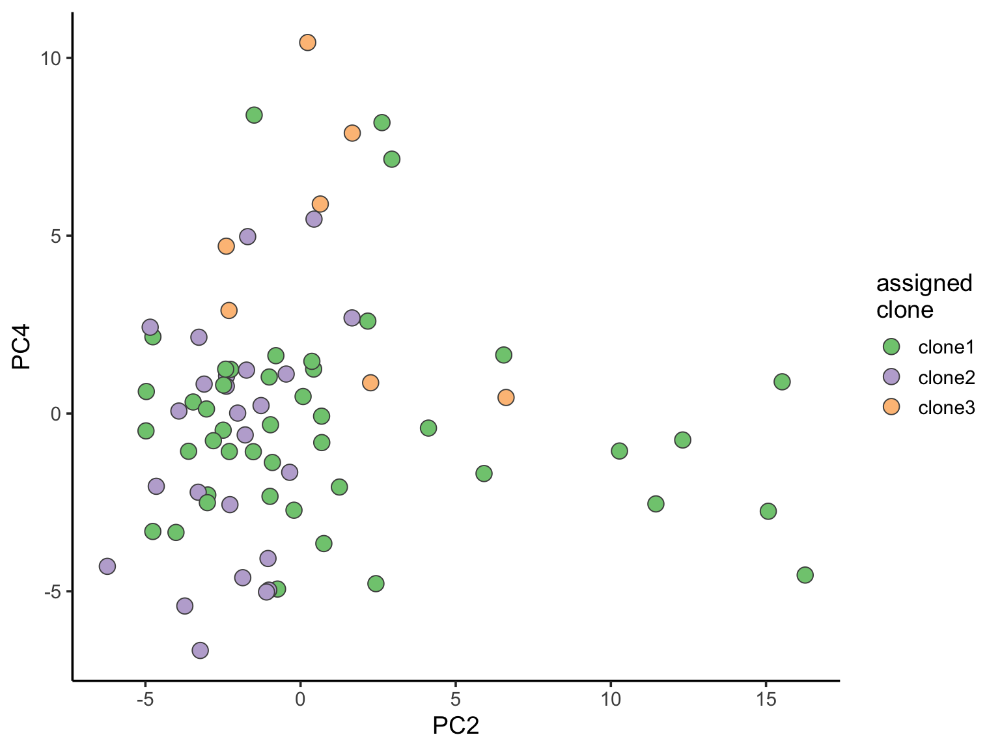
ggplot(pca_unst, aes(x = PC3, y = PC4, fill = clone)) +
geom_point(pch = 21, size = 4, colour = "gray30") +
scale_fill_brewer(palette = "Accent", name = "assigned\nclone") +
theme_classic(14)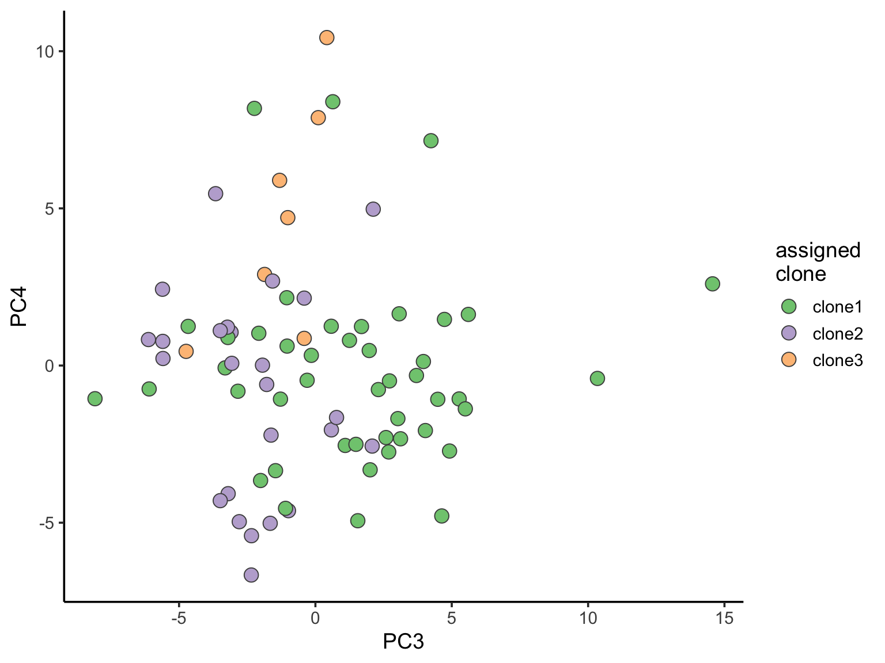
We can also explore how inferred cell cycle phase information relates to the PCA components.
pca_unst$cyclone_phase <- factor(pca_unst$cyclone_phase, levels = c("G1", "S", "G2M"))
ggplot(pca_unst, aes(x = PC1, y = PC2, colour = cyclone_phase,
shape = clone)) +
geom_point(size = 6) +
scale_color_manual(values = magma(6)[c(1, 3, 5)], name = "cell cycle\nphase") +
xlab("PC1 (10% variance)") +
ylab("PC2 (5% variance)") +
theme_classic(18)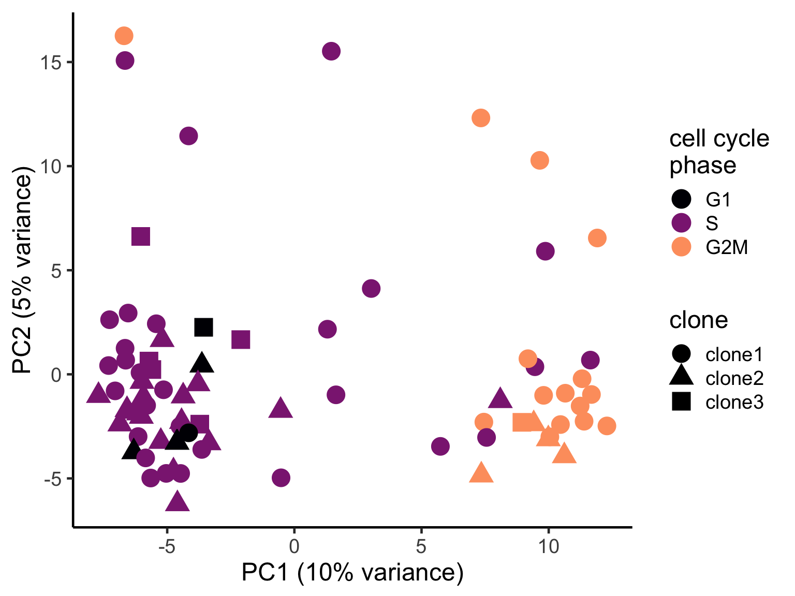
ggsave("figures/donor_specific/joxm_pca.png", height = 6, width = 9.5)
ggsave("figures/donor_specific/joxm_pca.pdf", height = 6, width = 9.5)
ggsave("figures/donor_specific/joxm_pca.svg", height = 6, width = 9.5)
pca_unst$cyclone_phase <- factor(pca_unst$cyclone_phase, levels = c("G1", "S", "G2M"))
ggplot(pca_unst, aes(x = PC2, y = PC3, colour = cyclone_phase,
shape = clone)) +
geom_point(size = 6) +
scale_color_manual(values = magma(6)[c(1, 3, 5)], name = "cell cycle\nphase") +
xlab("PC2 (5% variance)") +
ylab("PC3 (3% variance)") +
theme_classic(18)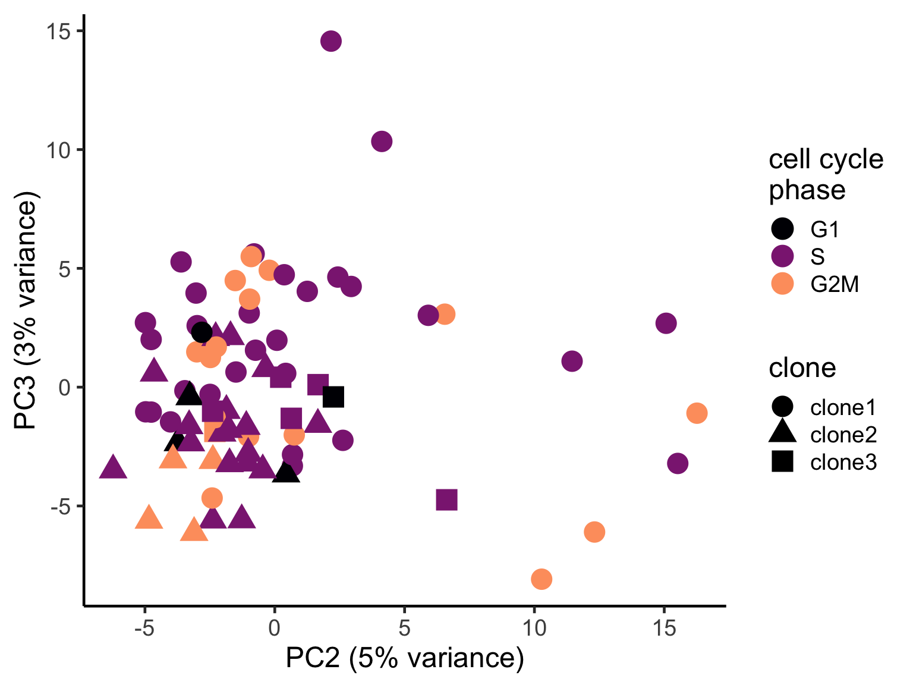
ggplot(pca_unst, aes(x = PC1, y = PC2, fill = G2M,
shape = clone)) +
geom_point(colour = "gray50", size = 5) +
scale_shape_manual(values = c(21, 23, 25), name = "clone") +
scico::scale_fill_scico(palette = "bilbao", name = "G2/M score") +
scale_size_continuous(range = c(4, 6)) +
xlab("PC1 (10% variance)") +
ylab("PC2 (5% variance)") +
theme_classic(18)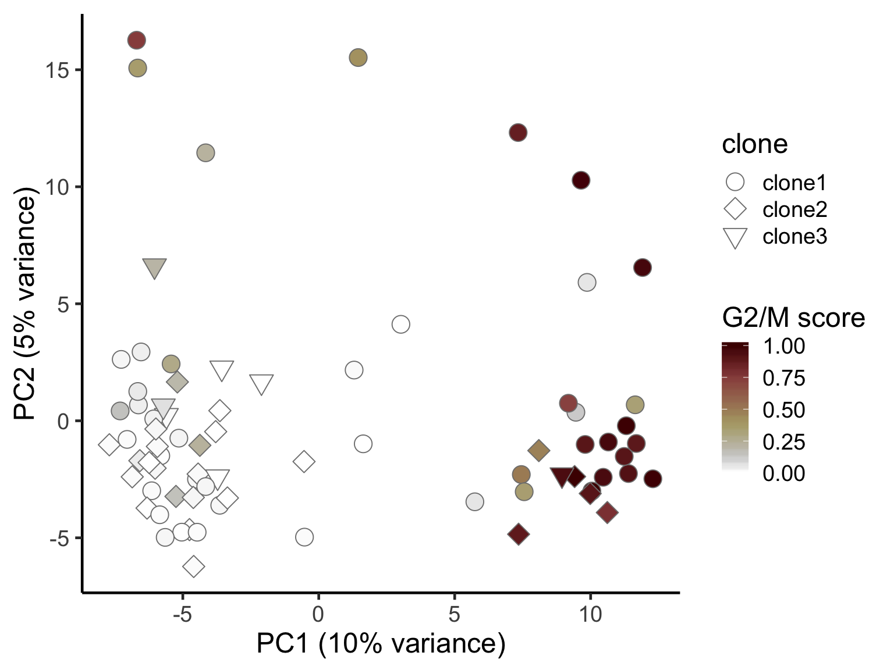
ggsave("figures/donor_specific/joxm_pca_g2m_score.png", height = 6, width = 9.5)
ggsave("figures/donor_specific/joxm_pca_g2m_score.pdf", height = 6, width = 9.5)
ggsave("figures/donor_specific/joxm_pca_g2m_score.svg", height = 6, width = 9.5)
ggplot(pca_unst, aes(x = PC1, y = PC2, colour = S,
shape = clone)) +
geom_point(size = 5) +
scale_color_viridis(option = "B") +
xlab("PC1 (10% variance)") +
ylab("PC2 (5% variance") +
theme_classic(18)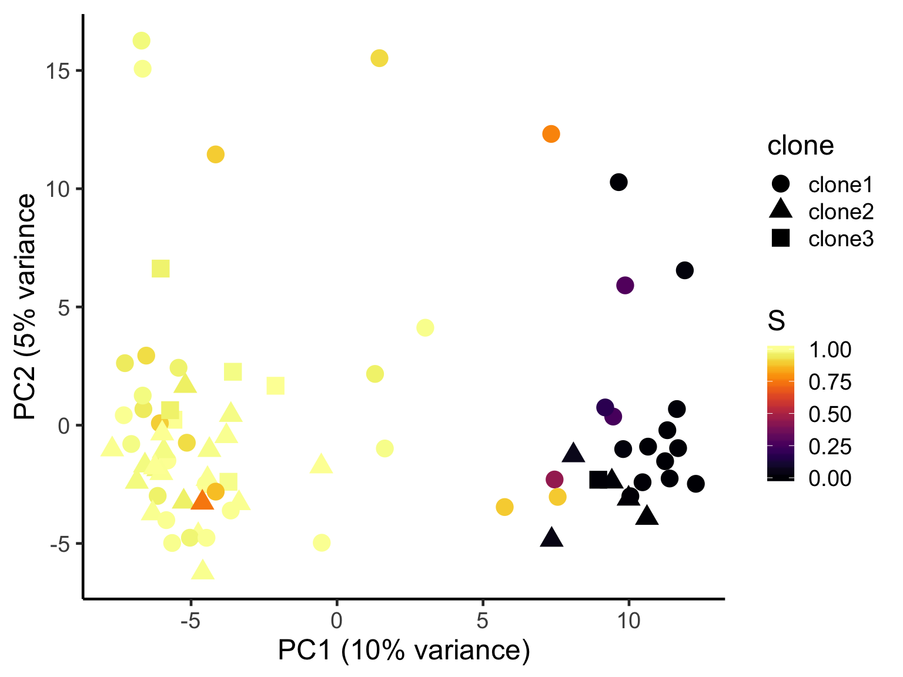
ggplot(pca_unst, aes(x = PC1, y = PC2, colour = G1,
shape = clone)) +
geom_point(size = 5) +
scale_color_viridis(option = "B") +
xlab("PC1 (10% variance)") +
ylab("PC2 (5% variance") +
theme_classic(18)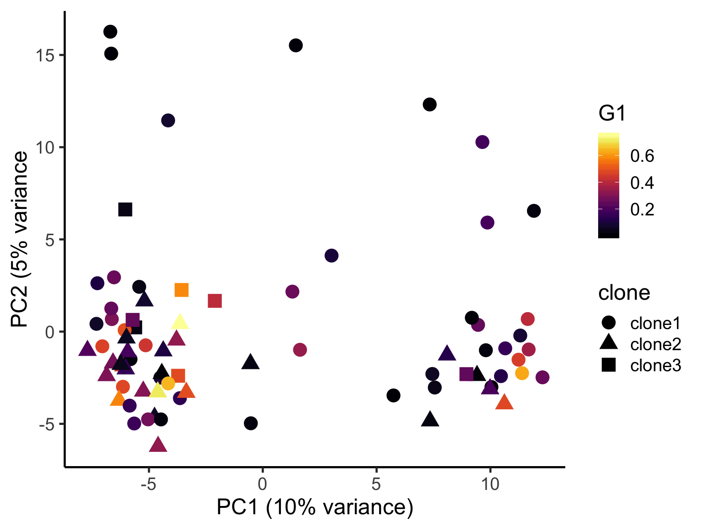
Number of variants used for clone ID looks to have little relationship to global structure in expression PCA space.
ggplot(pca_unst, aes(x = PC1, y = PC2, fill = clone2_prob, size = nvars_cloneid)) +
geom_point(pch = 21, colour = "gray30") +
scale_fill_viridis(option = "B", name = "clone2\nprobability") +
scale_size_continuous(name = "# variants\nfor clone ID") +
theme_classic(14)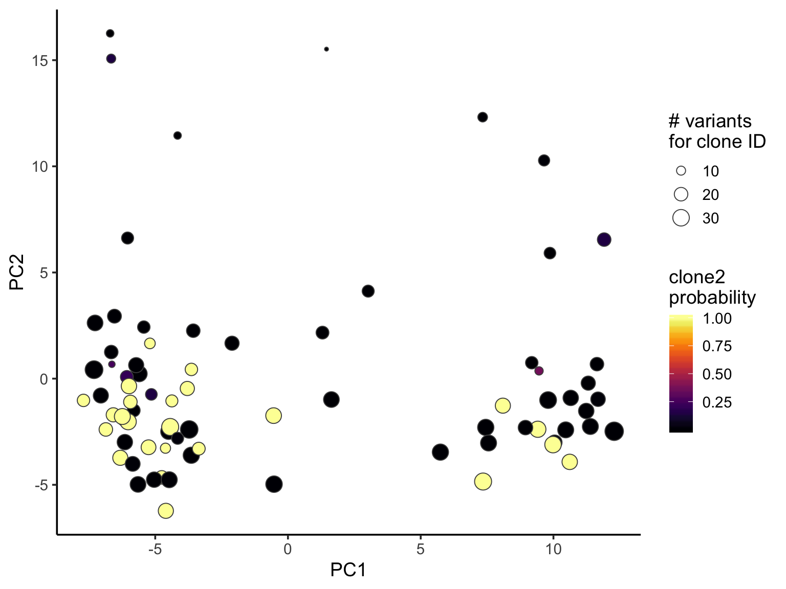
DE accounting for cell cycle in model
Load DE results when accounting for/testing for cell cycle state. We fit GLMs for differential expression as shown above, but including cell cycle scores inferred using the cyclone function in the scran package.
First, we look at genes that are DE when comparing a model with technical factors and cell cycle scores to a null model with just technical factors (no clone factor here). As one might expect, there is a large number of DE genes for cell cycle.
de_res_cc <- readRDS("data/de_analysis_FTv62/cellcycle_analyses/filt_lenient.cell_coverage_sites.de_results_unstimulated_cells.rds")
de_joxm_cellcycle_only <- de_res_cc$cellcycle_only$qlf_list$joxm
topTags(de_res_cc$cellcycle_only$qlf_list$joxm)Coefficient: G1 S G2M
logFC.G1 logFC.S logFC.G2M logCPM F
ENSG00000166851_PLK1 -2.9500051 -7.478386 0.1798167 6.637237 71.24342
ENSG00000142945_KIF2C -2.8548668 -7.219331 0.7626621 5.085581 65.42649
ENSG00000126787_DLGAP5 0.8865819 -6.100050 1.6240057 4.583859 60.43557
ENSG00000058804_NDC1 0.5330466 -5.941573 0.4918901 3.577027 57.77159
ENSG00000143228_NUF2 -3.8428900 -7.612558 -0.5390044 5.017414 50.72767
ENSG00000117399_CDC20 -5.5534364 -7.672110 0.6110384 6.344143 49.93985
ENSG00000024526_DEPDC1 -2.8727134 -7.169126 -0.3452155 4.269838 45.95045
ENSG00000148773_MKI67 -5.5363636 -3.550540 3.9024209 5.215892 43.22661
ENSG00000131747_TOP2A -8.0854497 -6.189015 2.7970999 6.918126 40.90662
ENSG00000169679_BUB1 -7.8101939 -5.899641 0.2566063 4.875571 40.28345
PValue FDR
ENSG00000166851_PLK1 2.922920e-23 3.178968e-19
ENSG00000142945_KIF2C 3.822048e-22 2.078429e-18
ENSG00000126787_DLGAP5 3.946876e-21 1.430874e-17
ENSG00000058804_NDC1 1.448014e-20 3.937151e-17
ENSG00000143228_NUF2 5.505566e-19 1.197571e-15
ENSG00000117399_CDC20 8.434865e-19 1.528960e-15
ENSG00000024526_DEPDC1 7.823899e-18 1.215610e-14
ENSG00000148773_MKI67 3.834558e-17 5.213082e-14
ENSG00000131747_TOP2A 1.557159e-16 1.881740e-13
ENSG00000169679_BUB1 2.641059e-16 2.872416e-13summary(decideTests(de_res_cc$cellcycle_only$qlf_list$joxm, p.value = 0.1)) G1+S+G2M
NotSig 9233
Sig 1643When including cell cycle scores in the model, but testing for differential expression between clones, we still find many DE genes - a similar number to when not including cell cycle scores in the model.
summary(decideTests(de_res_cc$cellcycle_clone$qlf_list$joxm, p.value = 0.1)) assignedclone2+assignedclone3
NotSig 10080
Sig 796topTags(de_res_cc$cellcycle_clone$qlf_list$joxm)Coefficient: assignedclone2 assignedclone3
logFC.assignedclone2 logFC.assignedclone3
ENSG00000205542_TMSB4X -0.2523841 -5.82148381
ENSG00000164530_PI16 -0.3752611 8.62594854
ENSG00000135776_ABCB10 0.2568207 5.11578252
ENSG00000164099_PRSS12 -2.5160626 4.05691487
ENSG00000124508_BTN2A2 -0.3307820 3.91366788
ENSG00000215271_HOMEZ 3.9844759 1.98280951
ENSG00000095739_BAMBI 4.1473320 -0.01415638
ENSG00000146776_ATXN7L1 5.2645583 3.24665994
ENSG00000173295_FAM86B3P 1.6128377 7.28991537
ENSG00000256977_LIMS3 3.0572045 0.42525813
logCPM F PValue FDR
ENSG00000205542_TMSB4X 12.477947 102.56975 2.342200e-23 2.547377e-19
ENSG00000164530_PI16 6.713362 31.47340 6.405876e-11 3.483515e-07
ENSG00000135776_ABCB10 2.677884 31.24981 2.044328e-10 7.411372e-07
ENSG00000164099_PRSS12 3.227398 26.14641 1.758302e-09 4.780824e-06
ENSG00000124508_BTN2A2 2.496920 30.66882 5.500365e-09 1.196439e-05
ENSG00000215271_HOMEZ 2.859425 22.72593 1.253987e-08 2.273061e-05
ENSG00000095739_BAMBI 3.003891 26.33436 1.585840e-08 2.463943e-05
ENSG00000146776_ATXN7L1 3.836295 21.58778 3.350979e-08 4.374888e-05
ENSG00000173295_FAM86B3P 3.305207 21.11722 3.620264e-08 4.374888e-05
ENSG00000256977_LIMS3 2.705957 20.87919 7.477042e-08 8.132031e-05When doing gene set testing after adjusting for cell cycle effects, unsurprisingly, G2M checkpoint and mitotic spindle gene sets are no longer significant, although E2F targets remains nominally significant (FDR < 10%), showing that even for cell cycle/proliferation gene sets not all of the signal is captured by cell cycle scores from cyclone.
## accounting for cell cycle in model
head(de_res_cc$camera$H$joxm$clone2_clone1$logFC) NGenes Direction PValue FDR
HALLMARK_E2F_TARGETS 198 Down 0.001797878 0.0898939
HALLMARK_G2M_CHECKPOINT 189 Down 0.005397947 0.1349487
HALLMARK_ALLOGRAFT_REJECTION 83 Down 0.040155202 0.6692534
HALLMARK_MITOTIC_SPINDLE 180 Down 0.077429835 0.7971485
HALLMARK_WNT_BETA_CATENIN_SIGNALING 23 Down 0.094529863 0.7971485
HALLMARK_MYOGENESIS 115 Down 0.114033788 0.7971485Overall, there is reasonably high concordance in P-values for clone DE with or without accounting for cell cycle scores, though the ranking of genes for DE does change with the two approaches.
df <- data_frame(
pval_clone = de_res$qlf_list$joxm$table$PValue,
fdr_clone = p.adjust(de_res$qlf_list$joxm$table$PValue, method = "BH"),
pval_cellcycle_only = de_res_cc$cellcycle_only$qlf_list$joxm$table$PValue,
pval_cellcycle_clone = de_res_cc$cellcycle_clone$qlf_list$joxm$table$PValue)
ggplot(df, aes(-log10(pval_clone), -log10(pval_cellcycle_clone),
colour = fdr_clone < 0.05)) +
geom_point() +
geom_abline(intercept = 0, slope = 1) +
xlab("P-value for clone DE, not accounting for cell cycle (-log10 scale)") +
ylab("P-value for clone DE, accounting for cell cycle (-log10 scale)") +
theme_classic()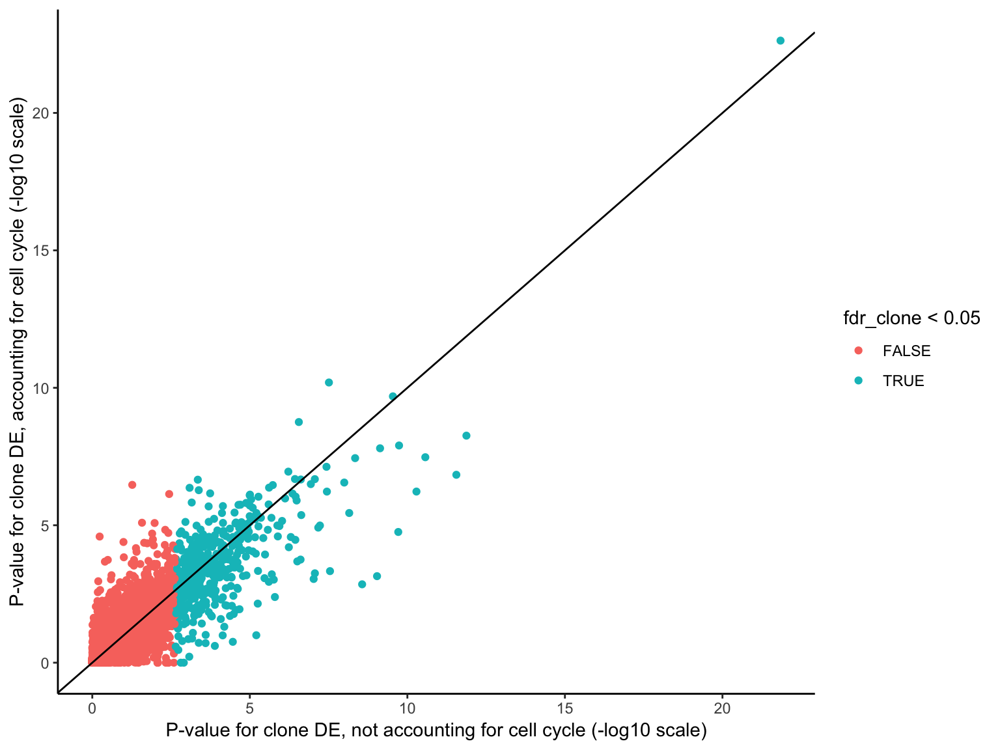
Combined figure
For publication, we put together a combined figure summarising the analyses conducted above.
## tree and cell assignment
snv_label <- cardelino:::mut.label(cell_assign_joxm$tree)
fig_tree <- plot_tree(cell_assign_joxm$full_tree, orient = "v") +
xlab("Clonal tree") +
cardelino:::heatmap.theme(size = 16) +
theme(axis.text.x = element_blank(), axis.title.y = element_text(size = 20))
prob_to_plot <- cell_assign_joxm$prob_mat[
colnames(sce_joxm)[sce_joxm$well_condition == "unstimulated"], ]
hc <- hclust(dist(prob_to_plot))
clone_ids <- colnames(prob_to_plot)
clone_frac <- colMeans(prob_to_plot[matrixStats::rowMaxs(prob_to_plot) > 0.5,])
clone_perc <- paste0(clone_ids, ": ",
round(clone_frac*100, digits = 1), "%")
colnames(prob_to_plot) <- clone_perc
nba.m <- as_data_frame(prob_to_plot[hc$order,]) %>%
dplyr::mutate(cell = rownames(prob_to_plot[hc$order,])) %>%
gather(key = "clone", value = "prob", -cell)
nba.m <- dplyr::mutate(nba.m, cell = factor(
cell, levels = rownames(prob_to_plot[hc$order,])))
fig_assign <- ggplot(nba.m, aes(clone, cell, fill = prob)) +
geom_tile(show.legend = TRUE) +
# scale_fill_gradient(low = "white", high = "firebrick4",
# name = "posterior probability of assignment") +
scico::scale_fill_scico(palette = "oleron", direction = 1) +
ylab(paste("Single cells")) +
cardelino:::heatmap.theme(size = 16) + #cardelino:::pub.theme() +
theme(axis.title.y = element_text(size = 20), legend.position = "bottom",
legend.text = element_text(size = 12), legend.key.size = unit(0.05, "npc"))
p_tree <- plot_grid(fig_tree, fig_assign, nrow = 2, rel_heights = c(0.46, 0.52))
## cell cycle barplot
p_bar <- as.data.frame(colData(de_res[["sce_list_unst"]][["joxm"]])) %>%
dplyr::mutate(Cell_Cycle = factor(cyclone_phase, levels = c("G2M", "S", "G1")),
assigned = factor(assigned, levels = c("clone3", "clone2", "clone1"))) %>%
ggplot(aes(x = assigned, fill = Cell_Cycle, group = Cell_Cycle)) +
geom_bar(position = "fill") +
scale_fill_manual(values = c("#ff6a5c", "#ccdfcb", "#414141")) +
coord_flip() +
ylab("proportion of cells") +
guides(fill = guide_legend(reverse = TRUE)) +
theme(axis.title.y = element_blank())
## effects on mutated clone
df_to_plot <- mut_genes_df_allcells %>%
dplyr::filter(!is.na(logFC), donor == "joxm") %>%
dplyr::filter(!duplicated(gene)) %>%
dplyr::mutate(
FDR = p.adjust(PValue, method = "BH"),
consequence_simplified = factor(
consequence_simplified,
levels(as.factor(consequence_simplified))[order(tmp4[["med"]])]),
de = ifelse(FDR < 0.2, "FDR < 0.2", "FDR > 0.2"))
p_mutated_clone <- ggplot(df_to_plot, aes(y = logFC, x = consequence_simplified)) +
geom_hline(yintercept = 0, linetype = 1, colour = "black") +
geom_boxplot(outlier.size = 0, outlier.alpha = 0, fill = "gray90",
colour = "firebrick4", width = 0.2, size = 1) +
ggbeeswarm::geom_quasirandom(aes(fill = -log10(PValue)),
colour = "gray40", pch = 21, size = 4) +
geom_segment(aes(y = -0.25, x = 0, yend = -1, xend = 0),
colour = "black", size = 1, arrow = arrow(length = unit(0.5, "cm"))) +
annotate("text", y = -3, x = 0, size = 6, label = "lower in mutated clone") +
geom_segment(aes(y = 0.25, x = 0, yend = 1, xend = 0),
colour = "black", size = 1, arrow = arrow(length = unit(0.5, "cm"))) +
annotate("text", y = 3, x = 0, size = 6, label = "higher in mutated clone") +
scale_x_discrete(expand = c(0.1, .05), name = "consequence") +
scale_y_continuous(expand = c(0.1, 0.1), name = "logFC") +
expand_limits(x = c(-0.75, 8)) +
theme_ridges(22) +
coord_flip() +
scale_fill_viridis(option = "B", name = "-log10(P)") +
theme(strip.background = element_rect(fill = "gray90"),
legend.position = "right") +
guides(color = FALSE)
## PCA
p_pca <- ggplot(pca_unst, aes(x = PC2, y = PC3, fill = clone,
shape = clone)) +
geom_point(colour = "gray50", size = 5) +
scale_shape_manual(values = c(21, 23, 25, 22, 24, 26), name = "clone") +
# scico::scale_fill_scico(palette = "bilbao", name = "G2/M score") +
ggthemes::scale_fill_canva(palette = "Surf and turf") +
scale_size_continuous(range = c(4, 6)) +
xlab("PC2 (5% variance)") +
ylab("PC3 (3% variance)") +
theme_classic(18)
# ggplot(pca_unst, aes(x = PC2, y = PC3, colour = clone,
# shape = cyclone_phase)) +
# geom_point(alpha = 0.9, size = 5) +
# scale_shape_manual(values = c(15, 17, 19), name = "clone") +
# # scico::scale_fill_scico(palette = "bilbao", name = "G2/M score") +
# ggthemes::scale_color_canva(palette = "Surf and turf") +
# scale_size_continuous(range = c(4, 6)) +
# xlab("PC2 (5% variance)") +
# ylab("PC3 (3% variance)") +
# theme_classic(18)
## volcano
de_joxm_cl2_vs_cl1 <- de_res$qlf_pairwise$joxm$clone2_clone1$table
de_joxm_cl2_vs_cl1[["gene"]] <- rownames(de_joxm_cl2_vs_cl1)
de_joxm_cl2_vs_cl1 <- de_joxm_cl2_vs_cl1 %>%
dplyr::mutate(FDR = adj_pvalues(ihw(PValue ~ logCPM, alpha = 0.1)),
sig = FDR < 0.1,
signed_F = sign(logFC) * F)
de_joxm_cl2_vs_cl1[["lab"]] <- ""
int_genes_entrezid <- c(Hs.H$HALLMARK_G2M_CHECKPOINT, Hs.H$HALLMARK_E2F_TARGETS,
Hs.H$HALLMARK_MITOTIC_SPINDLE)
mm <- match(int_genes_entrezid, de_joxm_cl2_vs_cl1$entrezid)
mm <- mm[!is.na(mm)]
int_genes_hgnc <- de_joxm_cl2_vs_cl1$hgnc_symbol[mm]
genes_to_label <- (de_joxm_cl2_vs_cl1[["hgnc_symbol"]] %in% int_genes_hgnc &
de_joxm_cl2_vs_cl1[["FDR"]] < 0.01)
de_joxm_cl2_vs_cl1[["lab"]][genes_to_label] <-
de_joxm_cl2_vs_cl1[["hgnc_symbol"]][genes_to_label]
de_joxm_cl2_vs_cl1[["cell_cycle_gene"]] <- (de_joxm_cl2_vs_cl1$entrezid %in%
int_genes_entrezid)
p_volcano <- ggplot(de_joxm_cl2_vs_cl1, aes(x = logFC, y = -log10(PValue),
fill = sig, label = lab)) +
geom_point(aes(size = sig), pch = 21, colour = "gray40") +
geom_label_repel(show.legend = FALSE,
arrow = arrow(type = "closed", length = unit(0.25, "cm")),
nudge_x = 0.2, nudge_y = 0.3, fill = "gray95") +
geom_segment(aes(x = -1, y = 0, xend = -4, yend = 0),
colour = "black", size = 1, arrow = arrow(length = unit(0.5, "cm"))) +
annotate("text", x = -4, y = -0.5, label = "higher in clone1", size = 6) +
geom_segment(aes(x = 1, y = 0, xend = 4, yend = 0),
colour = "black", size = 1, arrow = arrow(length = unit(0.5, "cm"))) +
annotate("text", x = 4, y = -0.5, label = "higher in clone2", size = 6) +
scale_fill_manual(values = c("gray60", "firebrick"),
label = c("N.S.", "FDR < 10%"), name = "") +
scale_size_manual(values = c(1, 3), guide = FALSE) +
guides(alpha = FALSE,
fill = guide_legend(override.aes = list(size = 5))) +
theme_classic(20) + theme(legend.position = "right")
# ggplot(de_joxm_cl2_vs_cl1, aes(x = logFC, y = -log10(PValue),
# fill = cell_cycle_gene, label = lab)) +
# geom_point(aes(size = sig), pch = 21, colour = "gray40") +
# geom_point(aes(size = sig), pch = 21, colour = "gray40",
# data = dplyr::filter(de_joxm_cl2_vs_cl1, cell_cycle_gene)) +
# geom_label_repel(show.legend = FALSE,
# arrow = arrow(type = "closed", length = unit(0.25, "cm")),
# nudge_x = 0.2, nudge_y = 0.3, fill = "gray95") +
# geom_segment(aes(x = -1, y = 0, xend = -4, yend = 0),
# colour = "black", size = 1, arrow = arrow(length = unit(0.5, "cm"))) +
# annotate("text", x = -4, y = -0.5, label = "higher in clone1", size = 6) +
# geom_segment(aes(x = 1, y = 0, xend = 4, yend = 0),
# colour = "black", size = 1, arrow = arrow(length = unit(0.5, "cm"))) +
# annotate("text", x = 4, y = -0.5, label = "higher in clone2", size = 6) +
# scale_fill_manual(values = c("gray60", "firebrick"),
# label = c("N.S.", "FDR < 10%"), name = "") +
# scale_size_manual(values = c(1, 3), guide = FALSE) +
# guides(alpha = FALSE) +
# theme_classic(20) + theme(legend.position = "right")
## genesets
cam_H_pw <- de_res$camera$H$joxm$clone2_clone1$logFC
cam_H_pw[["geneset"]] <- rownames(cam_H_pw)
cam_H_pw <- cam_H_pw %>%
dplyr::mutate(sig = FDR < 0.05)
cam_H_pw[["lab"]] <- ""
cam_H_pw[["lab"]][1:3] <-
cam_H_pw[["geneset"]][1:3]
cam_H_pw <- dplyr::mutate(
cam_H_pw,
Direction = gsub("clone4", "clone2", Direction)
)
p_genesets <- cam_H_pw %>%
ggplot(aes(x = Direction, y = -log10(PValue), colour = sig,
label = lab)) +
ggbeeswarm::geom_quasirandom(aes(size = NGenes)) +
geom_label_repel(show.legend = FALSE,
nudge_y = 0.3, nudge_x = 0.3, fill = "gray95") +
scale_colour_manual(values = c("gray50", "firebrick"),
label = c("N.S.", "FDR < 5%"), name = "") +
guides(alpha = FALSE,
colour = guide_legend(override.aes = list(size = 5))) +
xlab("Gene set enrichment direction") +
theme_classic(20) + theme(legend.position = "right")
## produce combined fig
## combine pca and barplot
p_bar_pca <- ggdraw() +
draw_plot(p_pca + theme(legend.justification = "bottom"), 0, 0, 1, 1) +
draw_plot(p_bar, x = 0.48, 0.65, height = 0.35, width = 0.52, scale = 1)
ggdraw() +
draw_plot(p_tree, x = 0, y = 0.45, width = 0.48, height = 0.55, scale = 1) +
draw_plot(p_bar_pca, x = 0.52, y = 0.45, width = 0.48, height = 0.55, scale = 1) +
draw_plot(p_volcano, x = 0, y = 0, width = 0.48, height = 0.45, scale = 1) +
draw_plot(p_genesets, x = 0.52, y = 0, width = 0.48, height = 0.45, scale = 1) +
draw_plot_label(letters[1:4], x = c(0, 0.5, 0, 0.5),
y = c(1, 1, 0.45, 0.45), size = 36)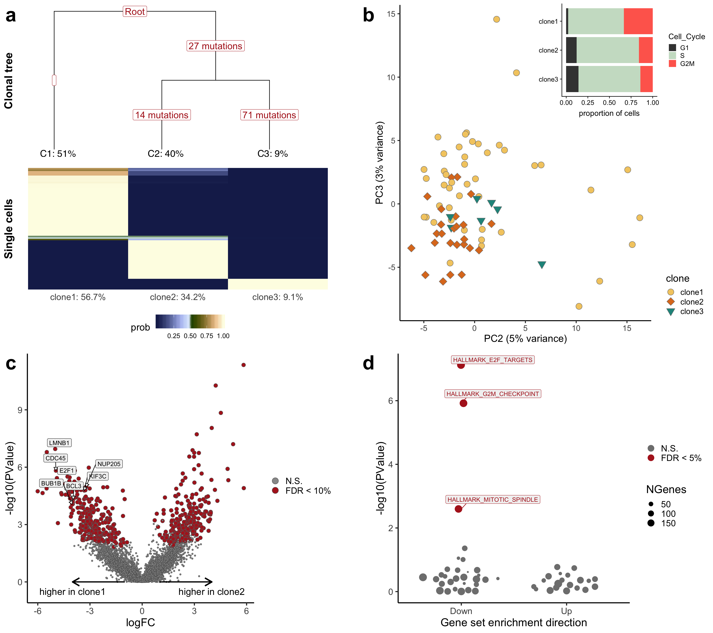
ggsave("figures/donor_specific/joxm_combined_fig.png",
height = 16, width = 18)
ggsave("figures/donor_specific/joxm_combined_fig.pdf",
height = 16, width = 18)
## plots for talk
ggsave("figures/donor_specific/joxm_bar_pca.png", plot = p_bar_pca,
height = 7, width = 10)
ggsave("figures/donor_specific/joxm_volcano.png", plot = p_volcano,
height = 6, width = 10)
ggsave("figures/donor_specific/joxm_genesets.png", plot = p_genesets,
height = 6, width = 10)
ggsave("figures/donor_specific/joxm_mutated_clone.png", plot = p_mutated_clone,
height = 6, width = 14)
# ggdraw() +
# draw_plot(p_tree, x = 0, y = 0.57, width = 0.48, height = 0.43, scale = 1) +
# draw_plot(p_bar_pca, x = 0.52, y = 0.57, width = 0.48, height = 0.43, scale = 1) +
# draw_plot(p_volcano, x = 0, y = 0.3, width = 0.48, height = 0.27, scale = 1) +
# draw_plot(p_genesets, x = 0.52, y = 0.3, width = 0.48, height = 0.27, scale = 1) +
# #draw_plot(p_table, x = 0, y = 0.2, width = 1, height = 0.15, scale = 1) +
# draw_plot(p_mutated_clone, x = 0.05, y = 0, width = 0.9, height = 0.3, scale = 1) +
# draw_plot_label(letters[1:5], x = c(0, 0.5, 0, 0.5, 0),
# y = c(1, 1, 0.57, 0.57, 0.3), size = 36)
# ggsave("figures/donor_specific/joxm_combined_fig.png",
# height = 20, width = 19)
# ggsave("figures/donor_specific/joxm_combined_fig.pdf",
# height = 20, width = 19)Session information
devtools::session_info() setting value
version R version 3.5.1 (2018-07-02)
system x86_64, darwin15.6.0
ui X11
language (EN)
collate en_GB.UTF-8
tz Europe/London
date 2018-08-17
package * version date source
AnnotationDbi * 1.42.1 2018-05-08 Bioconductor
ape 5.1 2018-04-04 CRAN (R 3.5.0)
assertthat 0.2.0 2017-04-11 CRAN (R 3.5.0)
backports 1.1.2 2017-12-13 CRAN (R 3.5.0)
base * 3.5.1 2018-07-05 local
beeswarm 0.2.3 2016-04-25 CRAN (R 3.5.0)
bindr 0.1.1 2018-03-13 CRAN (R 3.5.0)
bindrcpp * 0.2.2 2018-03-29 CRAN (R 3.5.0)
Biobase * 2.40.0 2018-05-01 Bioconductor
BiocGenerics * 0.26.0 2018-05-01 Bioconductor
BiocParallel * 1.14.2 2018-07-08 Bioconductor
biomaRt 2.36.1 2018-05-24 Bioconductor
Biostrings 2.48.0 2018-05-01 Bioconductor
bit 1.1-14 2018-05-29 CRAN (R 3.5.0)
bit64 0.9-7 2017-05-08 CRAN (R 3.5.0)
bitops 1.0-6 2013-08-17 CRAN (R 3.5.0)
blob 1.1.1 2018-03-25 CRAN (R 3.5.0)
broom 0.5.0 2018-07-17 CRAN (R 3.5.0)
BSgenome 1.48.0 2018-05-01 Bioconductor
cardelino * 0.0.13 2018-08-17 Bioconductor
cellranger 1.1.0 2016-07-27 CRAN (R 3.5.0)
cli 1.0.0 2017-11-05 CRAN (R 3.5.0)
colorspace 1.3-2 2016-12-14 CRAN (R 3.5.0)
compiler 3.5.1 2018-07-05 local
cowplot * 0.9.3 2018-07-15 CRAN (R 3.5.0)
crayon 1.3.4 2017-09-16 CRAN (R 3.5.0)
data.table 1.11.4 2018-05-27 CRAN (R 3.5.0)
datasets * 3.5.1 2018-07-05 local
DBI 1.0.0 2018-05-02 CRAN (R 3.5.0)
DelayedArray * 0.6.3 2018-08-01 Bioconductor
DelayedMatrixStats 1.2.0 2018-05-01 Bioconductor
devtools 1.13.6 2018-06-27 CRAN (R 3.5.0)
digest 0.6.15 2018-01-28 CRAN (R 3.5.0)
dplyr * 0.7.6 2018-06-29 CRAN (R 3.5.1)
edgeR * 3.22.3 2018-06-21 Bioconductor
evaluate 0.11 2018-07-17 CRAN (R 3.5.0)
fansi 0.2.3 2018-05-06 CRAN (R 3.5.0)
fdrtool 1.2.15 2015-07-08 CRAN (R 3.5.0)
forcats * 0.3.0 2018-02-19 CRAN (R 3.5.0)
gdtools * 0.1.7 2018-02-27 CRAN (R 3.5.0)
GenomeInfoDb * 1.16.0 2018-05-01 Bioconductor
GenomeInfoDbData 1.1.0 2018-04-25 Bioconductor
GenomicAlignments 1.16.0 2018-05-01 Bioconductor
GenomicFeatures 1.32.0 2018-05-01 Bioconductor
GenomicRanges * 1.32.6 2018-07-20 Bioconductor
ggbeeswarm 0.6.0 2017-08-07 CRAN (R 3.5.0)
ggforce * 0.1.3 2018-07-07 CRAN (R 3.5.0)
ggplot2 * 3.0.0 2018-07-03 CRAN (R 3.5.0)
ggrepel * 0.8.0 2018-05-09 CRAN (R 3.5.0)
ggridges * 0.5.0 2018-04-05 CRAN (R 3.5.0)
ggthemes * 4.0.0 2018-07-19 CRAN (R 3.5.0)
ggtree 1.12.6 2018-07-21 Bioconductor
git2r 0.23.0 2018-07-17 CRAN (R 3.5.0)
glue 1.3.0 2018-07-17 CRAN (R 3.5.0)
graphics * 3.5.1 2018-07-05 local
grDevices * 3.5.1 2018-07-05 local
grid 3.5.1 2018-07-05 local
gridExtra 2.3 2017-09-09 CRAN (R 3.5.0)
gtable 0.2.0 2016-02-26 CRAN (R 3.5.0)
haven 1.1.2 2018-06-27 CRAN (R 3.5.0)
hms 0.4.2 2018-03-10 CRAN (R 3.5.0)
htmltools 0.3.6 2017-04-28 CRAN (R 3.5.0)
httr 1.3.1 2017-08-20 CRAN (R 3.5.0)
IHW * 1.8.0 2018-05-01 Bioconductor
IRanges * 2.14.10 2018-05-16 Bioconductor
jsonlite 1.5 2017-06-01 CRAN (R 3.5.0)
knitr 1.20 2018-02-20 CRAN (R 3.5.0)
labeling 0.3 2014-08-23 CRAN (R 3.5.0)
lattice 0.20-35 2017-03-25 CRAN (R 3.5.1)
lazyeval 0.2.1 2017-10-29 CRAN (R 3.5.0)
limma * 3.36.2 2018-06-21 Bioconductor
locfit 1.5-9.1 2013-04-20 CRAN (R 3.5.0)
lpsymphony 1.8.0 2018-05-01 Bioconductor (R 3.5.0)
lubridate 1.7.4 2018-04-11 CRAN (R 3.5.0)
magrittr 1.5 2014-11-22 CRAN (R 3.5.0)
MASS 7.3-50 2018-04-30 CRAN (R 3.5.1)
Matrix 1.2-14 2018-04-13 CRAN (R 3.5.1)
matrixStats * 0.54.0 2018-07-23 CRAN (R 3.5.0)
memoise 1.1.0 2017-04-21 CRAN (R 3.5.0)
methods * 3.5.1 2018-07-05 local
modelr 0.1.2 2018-05-11 CRAN (R 3.5.0)
munsell 0.5.0 2018-06-12 CRAN (R 3.5.0)
nlme 3.1-137 2018-04-07 CRAN (R 3.5.1)
org.Hs.eg.db * 3.6.0 2018-05-15 Bioconductor
parallel * 3.5.1 2018-07-05 local
pheatmap 1.0.10 2018-05-19 CRAN (R 3.5.0)
pillar 1.3.0 2018-07-14 CRAN (R 3.5.0)
pkgconfig 2.0.1 2017-03-21 CRAN (R 3.5.0)
plyr 1.8.4 2016-06-08 CRAN (R 3.5.0)
prettyunits 1.0.2 2015-07-13 CRAN (R 3.5.0)
progress 1.2.0 2018-06-14 CRAN (R 3.5.0)
purrr * 0.2.5 2018-05-29 CRAN (R 3.5.0)
R.methodsS3 1.7.1 2016-02-16 CRAN (R 3.5.0)
R.oo 1.22.0 2018-04-22 CRAN (R 3.5.0)
R.utils 2.6.0 2017-11-05 CRAN (R 3.5.0)
R6 2.2.2 2017-06-17 CRAN (R 3.5.0)
RColorBrewer * 1.1-2 2014-12-07 CRAN (R 3.5.0)
Rcpp 0.12.18 2018-07-23 CRAN (R 3.5.0)
RCurl 1.95-4.11 2018-07-15 CRAN (R 3.5.0)
readr * 1.1.1 2017-05-16 CRAN (R 3.5.0)
readxl 1.1.0 2018-04-20 CRAN (R 3.5.0)
reshape2 1.4.3 2017-12-11 CRAN (R 3.5.0)
rhdf5 2.24.0 2018-05-01 Bioconductor
Rhdf5lib 1.2.1 2018-05-17 Bioconductor
rjson 0.2.20 2018-06-08 CRAN (R 3.5.0)
rlang * 0.2.1 2018-05-30 CRAN (R 3.5.0)
rmarkdown 1.10 2018-06-11 CRAN (R 3.5.0)
rprojroot 1.3-2 2018-01-03 CRAN (R 3.5.0)
Rsamtools 1.32.2 2018-07-03 Bioconductor
RSQLite 2.1.1 2018-05-06 CRAN (R 3.5.0)
rstudioapi 0.7 2017-09-07 CRAN (R 3.5.0)
rtracklayer 1.40.3 2018-06-02 Bioconductor
rvcheck 0.1.0 2018-05-23 CRAN (R 3.5.0)
rvest 0.3.2 2016-06-17 CRAN (R 3.5.0)
S4Vectors * 0.18.3 2018-06-08 Bioconductor
scales 0.5.0 2017-08-24 CRAN (R 3.5.0)
scater * 1.9.12 2018-08-03 Bioconductor
scico 1.0.0 2018-05-30 CRAN (R 3.5.0)
SingleCellExperiment * 1.2.0 2018-05-01 Bioconductor
slam 0.1-43 2018-04-23 CRAN (R 3.5.0)
snpStats 1.30.0 2018-05-01 Bioconductor
splines 3.5.1 2018-07-05 local
stats * 3.5.1 2018-07-05 local
stats4 * 3.5.1 2018-07-05 local
stringi 1.2.4 2018-07-20 CRAN (R 3.5.0)
stringr * 1.3.1 2018-05-10 CRAN (R 3.5.0)
SummarizedExperiment * 1.10.1 2018-05-11 Bioconductor
superheat * 0.1.0 2017-02-04 CRAN (R 3.5.0)
survival 2.42-6 2018-07-13 CRAN (R 3.5.0)
svglite 1.2.1 2017-09-11 CRAN (R 3.5.0)
tibble * 1.4.2 2018-01-22 CRAN (R 3.5.0)
tidyr * 0.8.1 2018-05-18 CRAN (R 3.5.0)
tidyselect 0.2.4 2018-02-26 CRAN (R 3.5.0)
tidytree 0.1.9 2018-06-13 CRAN (R 3.5.0)
tidyverse * 1.2.1 2017-11-14 CRAN (R 3.5.0)
tools 3.5.1 2018-07-05 local
treeio 1.4.2 2018-07-19 Bioconductor
tweenr 0.1.5 2016-10-10 CRAN (R 3.5.0)
tximport 1.8.0 2018-05-01 Bioconductor
units 0.6-0 2018-06-09 CRAN (R 3.5.0)
utf8 1.1.4 2018-05-24 CRAN (R 3.5.0)
utils * 3.5.1 2018-07-05 local
VariantAnnotation 1.26.1 2018-07-04 Bioconductor
vipor 0.4.5 2017-03-22 CRAN (R 3.5.0)
viridis * 0.5.1 2018-03-29 CRAN (R 3.5.0)
viridisLite * 0.3.0 2018-02-01 CRAN (R 3.5.0)
whisker 0.3-2 2013-04-28 CRAN (R 3.5.0)
withr 2.1.2 2018-03-15 CRAN (R 3.5.0)
workflowr 1.1.1 2018-07-06 CRAN (R 3.5.0)
XML 3.98-1.13 2018-08-01 CRAN (R 3.5.0)
xml2 1.2.0 2018-01-24 CRAN (R 3.5.0)
XVector 0.20.0 2018-05-01 Bioconductor
yaml 2.2.0 2018-07-25 CRAN (R 3.5.1)
zlibbioc 1.26.0 2018-05-01 Bioconductor This reproducible R Markdown analysis was created with workflowr 1.1.1